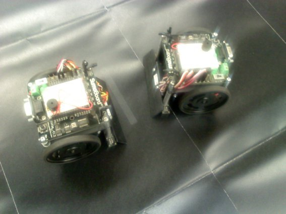

| A.I. アーティスティック・インテリジェンシー 創造知能: 不気味の谷のユーレカ | |
| MIRAIX | |
| Artist Intelligency (2016) | |
A.I. Artistic Intelligency
アーティスティック・
インテリジェンシー 創造知能
不気味の谷のユーレカ
＊ＭＩＲＡＩＸ＊
まあ、まず俺みたいなロボットオタクの男がこの話の語り手だ。とにかく俺の執着心とは何とやら。俺の名は赤霧（あかぎり）。酒の名じゃない。で、下の名前は万が一必要があれば言う程度だ。ネオパンゲア北東国の某大学院工学科博士課程を卒業し、とある某アストラファントマロボット工学研究所で一応は華々しく勤務を始めた２７歳。と書くとそれなりなのだがあまりプライベートは公にしたくない性分だ。

本所の研究員の初任給はあまり高く無く時間数も稼げない。取り敢えず給与は仕事を掛け持ちでそこそこ貰ってる身だが未だに駅近安アパートに一人で住んでる。いいだろう、ストイックさを増幅させる最適な環境だ、多分。言っておくが俺は顔は悪くはないと人に言われた事がある...だが、まあ...、良くも...無いかも知れない。あまり過剰に期待しないで欲しい。そういうレベルの男だ。そうそう、俺の言いたい事は、今とあるプロジェクトを任されているという事だった。小学５年あたりから開始したものでもう１７年くらいにもなろう。簡単に言うとロボット製作。それも限り無く人間に近く人間以上でもあるという想定の人型のロボットを。今ではある程度の設備のある高等学校や大学、研究所なら何処でもやってるだろう。俺もそいつを制作している内の一人なのだ。俺の場合は作ってるロボットをリアル以上にリアルに仕上げ、しかも男と女の両方の性別に化けるって可笑しなヤツに挑戦している。詳細については...おっと、今は研究所で勤務中、そしてもうすぐ昼休みが終わる。研究室に戻って仕事再開だ。
よし、俺がやっと作り上げたプログラムの内の一つが作業を終了している。この心臓部の機能を受け持つＡＩ（Artificial Intelligence人工知能）が完成するとこの制作中のロボット"ユーレカ"に豊かな表情が伴うはず。何故俺が彼女もしくは彼にユーレカという名を付けたのかと言うとこの言葉はギリシャ語で"我見い出せり"。古代ギリシャの数学者アルキメデスがゴールドの純正度の測定方法を発見された時に思わず口に出した言葉らしいので俺も彼にあやかりたいと思ったまでだ。そして単純だが丁度そのロボット研究を本格化させたいと思っていた頃、奨学金で渡った、教科としての数学の元祖ギリシャで勉強を始めピタゴラス教団やらアルキメデスやらと言った類に触れていたというタイミングもあった。だがしかしＡＩの始まりはと言うと......何故か古代で特にギリシャ・ローマが起源の一粒を創ったのかねえ...などと考えてしまうなあ。ブリテン生まれのアメリカーナ帝国の小説家、パメラ・マックコーダック・シャシャの言葉じゃないが"an ancient wish to forge the gods"『古代人は神の精製を望む』の如くでＡＩ、つまり神、もしくは宇宙規模の領域にまで足を突っ込みたい人間は今や増え過ぎたかと思う。俺の様な凡人までもが気軽にこういう事を考え始めているのだから。まあそれは科学という魔法がより万人にも扱える様に成って来た事実によるものだという事に他ならないのかも知れないがなあ。
あ、アレ？ユーレカに表情が...と、伴う...。どうした？
何故かユーレカの表情が予測以上にぎこちない。もっと自然に仕上がる筈だったのに。俺はユーレカが作る表情とそれに対しての生身の人間が受けるであろう反応や心情をビジュアル化、グラフ化させ様子を見てみる。解るかな？これらデータグラフが織りなす異様な凹凸状の曲線。これこそが世に言われる"不気味の谷"現象なのだ。グラフのこの暗黒の細い波のうねりの様なカーブが現れるとユーレカの顔部の筋肉は微妙な動きを見せ表情はカクカクと不自然に一定の動作を繰り返す。人間が成しえないこの超異様な動きこそ人間にとって不快な感情を湧き起こさせる要因なのだ。これでは人間との区別は一目瞭然。俺はもっともっと自然に人間界に溶け込んでくれるロボットを作り上げたい一心だ。例え残りの人生全てを費やしても。俺が業績を残せそうな分野と言えばこれくらいだしな。もしやってのけたら結構な偉業とは思うが。
このユーレカ。今現在は女性モードプログラムで走らせている。今日も掃除や洗濯をする訓練、料理をする訓練などを仕込んでいる。まあこの辺は普通の人間をトレーニングするのとさほど変わらない。ただ未だ普通に自然な動きで微笑んだり怒ったり泣いたりはしない。今は初期型のＡＩを取り付けていて微妙に自己学習するが基本教えた事しか実行しないので勿論反抗なんかしない。ただ普通の人間と解らないくらいに育て上げるには"心"や"感情"という機能を確実に発達させねばならない。このロボット、今はまだそこらにある物体とあまり変わりないと言えば可哀想だがあながち嘘でも無く...、こいつに本当に感情というものを与える事が出来るのか...映画や小説の世界では可能な事かも知らんがもしかしたら俺には無理な業なのかも知れないし感情を物体に植え付ける事態が既に御神に対する越権行為か人間の奢りか。まあ現段階では全ては希望的観測であり夢。ただ可能な限り前進だと思える方向へとひたすら無謀に邁進していくだけの気だるく途方も無い旅みたいなもんだ。この世の中、この手の研究を面白いと思ってくれる輩は世の中大変多いので遣り甲斐はあるしそれに対する世間の反応とやらも気になる。ここで夢の無い話で申し訳無いのだが費用面が一番の問題だ。どんなにうまく研究費リクエストに対するステートメントが書けてもこれだけは厳しい。公的な機関や財団なんかももうちょっと解り易い結果を求めて来るものなあ。それに俺が今まで出した結果なんて他の研究員と大差ないしな。
だから実は俺、このロボット研究員という肩書ともう一つの顔がある。それは...。
養護施設の職員。親の無い子供達を育てる手伝いという奴なのだが......このロボット研究に必要な心づもりとスキルに相重なる部分が十分あると感じ俺自身、今の二足ワラジ状態をそれ程苦とは感じていない...と言えばちょっと嘘になるがまあ、やってやれない事は無い、次の研究費が降りるまでの勉強だ。だがどちらかと言われればやはりロボット研究の方が楽しい。今はロボット相手は俺が傷付く言葉や行動を殆ど受けないから。それに反して養護施設でのガキ共は非常な位うざったい上に相当な勢いでむかつく。軽く反抗する程度ならまだいいが精神不安定な子達もいるので時に自分の身を守らねばならない場面もある。こっちはゴミ同然で捨てられた子供を救う手伝いをしてやってるってのに。そんな言い方をするなと世間からは非難されそうだがそんな生やさしい気持ちではやって行けないのも正直なとこだ。人間には邪心ってものがあるからな。邪心は他を攻撃する特性を持つ。人間ってのは面倒なんだ。早く俺のユーレカをもうちっと完成させてあの施設に連れて来て彼らクソ生意気なガキ共を不気味の谷の奥底に鎮め去るのも俺のささやかな夢の一つだと言っておこう。そうそう、電池が切れかかると更に不自然になるユーレカだがまあ少しずつ継ぎ目の無い動きに近付いて行ってくれていると感じるのでささやかな夢もいずれは...。
さあ、夕方からはあの養護施設で働く時間帯だ。到着すると早速ガキ共を避ける様に掃除に取りかかる俺。子供の成長や心情は学びたいが時にはこういう気分の時もある。
「あ、赤霧じゃん、何やってんだよ？」
俺に即効話しかけて来たのは今月１３歳になる女の子、瀬桃南紗（せとうなさ）。
教会に捨てられていたという良くあるパターンの孤児だ。
「シカト？辛い事でもあったのかよ＜＞」
南紗が暇そうな顔しながらも俺にちょっかいを掛けて来る。コイツはこの施設では年長の部類に入るが一番厄介な部類にも入る。以前無断夜間外出を試みた際、事もあろうにヤクザにケンカを売っていたのだ、しかも相手の正体も良く知らずに。どうも時々必要以上にハイテンションになるという精神興奮状態の様な疾患があるらしくちょっとした切っ掛けですごく極端に感情を露わすらしい。薬で時々テンションを押さえるが将来外界でうまくやっていけるか心配でもある。他の子供達と比べ人を全然恐れず自分から寄って行くのは気さくで良いと思うのだが寄るべきでないタイプの人間の検討がイマイチ付いていないのは問題だ。そういう事も教えていかねばならないし、孤児だろうがこの点では恐らくユーレカＡＩロボットの学習過程に近いものがあると思う。
「何ボーっとしてんの赤霧？女の人にでも振られたのかよ！ざまあ！」
ケラケラと嬉しそうに笑う南紗だがまあ今の状態だと特別な悩みはなさそうだ。
俺はやや無表情で頷き否定の意を表さなかった。女性に振られたというのはまあ今のところ嘘だがユーレカとの実験の事をこれに例えて言ってみた。
「えー？本当に振られたの？そんな揉め事起こす甲斐性さえなさそうなのによー？」
こいつ本当に１３歳？余計な知識と身長ばかり伸ばしやがって。
「赤霧何震えてんの？もしかして泣いちゃってるよ？」
泣いてるんじゃない、怒りと驚きで痙攣してるだけだ、と心で思って顔では愛想笑いならぬ相当微妙過ぎる俺の笑み。
「つまんないよ。」
そう言いつつ去って行った南紗だがヤツの不敵な含み笑いを俺は見逃さなかった。ま、取り敢えず一つの危機も一旦去ったがあまり俺をからかわんで欲しいね。ガキに取り乱されたる図は想像すると目に余るものがある故...。
簡単な掃除を終えた俺はリビングに入室した。すると３歳から１２歳の８人程の子供達が勉強したり絵を描いたり植物を育てたりそれぞれの時間を過ごしている姿がある。
「ああ、今日もいっらっしゃいませ。」
この養護施設の園長の緑樹（みどりじゅ）さん（６７）だ。俺は微笑みながら会釈する。
「今子供達は皆落ち着いてますわ。ここは今のところ大丈夫ですのよ、でもしよろしければ屋根や電灯の修理などお願いさせて頂いても...？」
緑樹さんはお年だが育ちが良かった人だと思える。今は未亡人でもう前職の小児科医を定年してるので自分でこの施設を開設し、こうやって子供達を助けている。立派な方もいたもんだ。俺は即効頷き修理の依頼を承諾する。
「本当に助かりますわ、こんなお若い方が子供達の面倒を見て下さるだけでなくこうやって周辺の用事もいつも手早く片付けて下さるなんて。」
そういって緑樹さんは嬉しそうに頭を下げた。しかしガキ共からすると俺は長老の部類らしいからどうも深いギャップを楽しめるな、この施設では。
俺は工具を揃え梯子で屋根の上に這い上がった。天候も良いし眺めも悪くない。釘やネジを口に銜え鼻歌を歌いながらサクサクと修理を進める。軽快に仕事が進むなあ。後はこの屋根板をしっかりと固定すれば終了。そしてご機嫌で一背伸びした後地上へ...。
と思ったがはしごが無い。誰だ。下を見るが誰もいない。はて...？すると反対側の屋根から誰か歩いて来る。
「............。」
「赤霧！」
アイツか...。またしても...。
「面白そうじゃんよ、もう修理終わったの？」
南紗...。全く何処まで人を弄べば気が済む？俺は立ちあがり両腕を胸元で組み、南紗をキツイ眼光で見降ろした。
「ちょ、何怒っての？南紗もこっそり手伝おうとして登って来たんだけどはしご落としちゃったんだよ。」
あまり反省をしていない態度で言う南紗だがはしごが無いのは事実。携帯で緑樹さんに連絡してはしごを持って来て貰う。簡単な事だ。
「赤霧、もうちょっとここに居ない？景色も綺麗だし...。」
南紗が俺の腕を無闇に引っ張ったので足を滑らせ掛けたので一旦携帯を切った。一体何を考えとるんだこ奴は。
＊
「南紗ね、街を出歩いてる時色んな人に会うんだけど時々思うよ。もしかしてこの人ごみの中に南紗の血の繋がっている人がいるかも知れないよって。」
困惑している南紗の表情に俺は深い溜息を吐いた。
「悲しいとかじゃないよ。だってもしその家族が変人だったら関らずに住んでラッキーだからよ。あ、ごめんね、話し易いんだ、赤霧とは。南紗って良く知らない人に話し掛けるけどやっぱちょっとは警戒してるからよ。」
嘘つけ。だったら何故ヤクザになんかケンカ吹っ掛ける。本当良く解らん事ばかり言う子だ。
街の日が少しずつ傾いて行くのが見える。もう４時過ぎだ。早く他の子供達の夕食の準備を始めないと。俺は再び携帯を取り出し連絡を取ろうとすると...。
チュッ。
何だ今の。俺は口に銜えていたままのネジをうっかり飲み込んでしまった。頬にはソフトで少し冷たい感触がしっかりと残っている。南紗が俺にもたれ掛かかって来たので俺はふいに立ち上がりその場から歩き出してしまった。無論屋根の端から足を滑らせたが辛うじて屋根に捕まった俺は宙ずりの無様な格好になってしまった。
「何で？」
南紗はポケットに仕舞っていた自分の携帯を取り出し助けを呼んだが遅かった。助け舟はすぐ到着したが俺は俺自身の体重を支え切れず地上へと華々しく落下。うまく足で着地したにも関わらず高さのせいでか恐らく骨に日々が入った、この痛み。元小児科だった緑樹さんのお陰で俺は応急処置を受ける事が出来たが酷い痛みは今は薬で一時的に抑えられているだけだ。
「はー、元医者がいると便利よー、世の中うまく出来てるよ。」
南紗が感心しているが誰のせいでこうなったと思っている？まあ俺自身あんなに取り乱されるとは思いもせず、ずっしりと自己嫌悪に陥っている...と思ったら急に腹痛が...。
飛んだ災難に見舞われた俺は夕食の準備を半ば置き去りにし早々に早退させて貰った。そして今、診察後に病院隣の薬局で買って来た薬を飲み自宅の小さなアパートで独り寂しく新発売の病人用コンビニ弁当を食っているところだ。ふと携帯を見るとメッセージが...。
『びっくりした？ごめんよm(__)m』
南紗からだった。
俺はとんでもない目に合わされたのだが何故か今までみたいに南紗に対してのクソガキという感情は薄らいでしまっている。何故だろう...。
今夜は早々と床に着き明日へと備える。何が南紗にその様な感情を...？
＊翌日。
腹の痛みも足の痛みも微妙だが、わめく程では無いのでさっさと支度をして研究所へと赴く。バイクで２５分。さて今日はユーレカにもっと人間に近付く為の行程を施す予定だ。今日は俺の話す言葉や動作によって反応を示すという訓練を行う。男にも変身出来るユーレカだが今はまだ変身に最低１０時間を要し夜間に進めるプログラムインストールの時間的妨げになるので女性モードで今日も走る。ユーレカの年齢設定は約２３歳でお年頃だ。このユーレカというロボットの性格や様々な設定は研究所所長からほぼ一任されていて...はっきり言ってしまえば適当だ。まあなるべく世間一般の権限やソサイエティーに対して制限の少ないそこいらの人物だと都合が良いかな...といった辺りだ。だが来週からは是非男モードでも試さねば...。
俺はユーレカのレスポンステストのリストを作成しそれに従った実験を開始する。
まずはユーレカに有難うと礼を言う。すると...あちらも頭を下げて来た。
これで中々丁寧な人という印象をもたらす。そして俺は再び礼を言うが今度は滅茶苦茶偉そうにぶっきら棒な態度で言ってみると...またもや先程とほぼ同じ程度の丁寧さで礼を返して来た。うーむ。これでは丁寧さよりも卑屈さも加味されて相手に嘗められてしまふ。ちょっとプログラムの設定を弄ってみるか。そして又もや超偉そうに礼を言ってあげると...今度は俺を殴ろうとして来たので俺は脇に挟んでた自分の松葉杖でとっさにガードした。ヤバイ。これでは相手に警察を呼ばれてしまふ。相手からの攻撃に対しての防御という項目だったがちょいとプログラムを弄り過ぎた。俺はユーレカを大人し過ぎず過激過ぎない割と標準的な人間に育てたいのだ。これ以上怪我をしてたまるものか。俺はユーレカと少々距離を置き実験を再開。今度は頭ごなしにしかってみるとユーレカは深々と頭を下げ謝る。中々大人な対応だな。そして今度は少々軽く怒ってみるとユーレカは会釈だけした。うーん、もうちっと反省させた方がいいかな？まあユーレカの反応を見た人間の反応も影響するであろうから一概にこれが正解というものは無い。今度はふざけて冗談を言ってみる。するとユーレカは首を傾げた。これは俺の馬鹿さ加減に対する対応か、もしくはユーレカのプログラムが冗談の意味を解していないのか。ジョークに対する反応の調査が一番難しいな...。だが俺が微笑むとユーレカも微笑んだ。ふむ、なかなか素敵な笑顔だな。これだと周囲の人間達も悪い気持ちにはならないだろう。後は肩を叩いたら振りかえるとか頭を撫でると喜ぶとかはたまた攻撃を仕掛けると防御に入るとか。基本的な反応について細かなバリーションを添えての固定化だな。結構色々とやってみた感じがする。後試してないのは...。そうだ、ユーレカを驚かそうか。デカイ声を出して飛び上がらすのはもう試行済みだから...話の内容で驚かす...いやこれは少々難易度が高いな。詳細な会話だとこれは基本的な生活の基盤があってこそ成り立つものかも知れないし。じゃ...。そこで俺はふと昨日の養護施設の屋根の上での出来事を思い出した。
チュッ。
いきなり南紗にやられたあの瞬間だ。俺は相当驚かされた...というか困惑させられた。アレをユーレカに試すとどうなるんだろう？ちょっと変態っぽい気分だが試してみる。周囲には誰もいませんね...と。
では失礼。
チュィッ。
残念ながら現段階ではユーレカの体表面の構造は人間からはちと遠い。どちらかと言うと金属的な硬質な感触が俺の唇に伝わった。ユーレカは身動きせず硬直したまま。それもそれで一つの反応かも知れないが恐らくユーレカは無反応を示しているのだろう。あまりの複雑さや微妙な対応には応答し兼ねる今どきのユーレカプログラム。もっと改良せねば生身の人間からは程遠い不気味の谷の住人だ。
少々気落ちしながらも本日の実験を終了し気持ちを明日に向ける為少しだけ次の準備をしてから研究所を後にする。
研究所施設の周辺は緑が広がっていてちょっとした公園の様だ。バイクに跨り超低速でゲートまで走らせていると...。
別部門で働いている紫流（しりゅう）さんにばったり遭遇した。別の部門...それは機械植物を制作する所だ。
「ああ、赤霧さん、お久振りです。ユーレカの研究は進んでおられますか？」
紫流さんは俺よりも長く研究職に勤めているが俺と違って他所の研究所からより好条件のフルタイムで引き抜かれてきた才女だ。俺は本日の流れを簡単に一通り彼女に説明した。
「ロボットの感情を自然に作り出すのは大変困難な部分ですね。ＡＩはどの程度使用されているんですか？」
紫流さんはいつも理論的で簡潔に物事を質問して来る。俺はまださほどＡＩを導入していない。俺が把握すべき領域を全て固めた段階で本格投入する予定だからだ。
「なるほどですね...。その方がレポートが段階的に進みますものね、解ります。こちらも機械植物をより本物に近付ける為、違ったレベルのものを作っていつも比べています。そして今や初期のプロトタイプと比べると格段に進化しました。いえ、むしろ本物の植物より優秀な種に育て上げる為に酸素変換や光合成の度合いを更にアップさせています。万が一地球上の全ての植物が滅びる事態となっても彼ら機械植物が生きていれば数世代先の人間の最低限の酸素濃度保持など生存活動は可能かと、しかしその様な状態になった地球には決してお目に掛かりたくないですけど。」
紫流さんはホホホ...と苦笑いする。
確かにそん時は地球は終わりの一途を辿っているって感じだろう。そういう途轍もない事などを考えていると訳が解らなくなるが今は科学の進歩の貢献にだけ集中していればいい。俺は紫流さんに軽く礼を言ってから研究所の門を潜った。
＊翌日。
研究施設内でユーレカを男モードで走らせる、はっきりとした行動の変化は直ぐには見られないので女モードでも現段階では大差はないのだろうが僅かに装着したＡＩが人間側の対応の変化、つまり俺の変化を記録する。流石に相手が美男子に変わると俺としては多少のジェラシーを感じなくも無いがまあ、あまりこんな事ばかり考えても仕方ないのでいつもの様に労働、感情テストに明け暮れる。
実験が本日終盤に差し掛かった頃、チャイムが鳴った。誰だ？俺がインタホンで返答したら娘さんがお見えです...だと？またアイツか？
ドアを開けるとやっぱりだ。どうやってこの場所を探し当てた？子供のくせに油断ならない。
「昨日遅くなって赤霧の呼んだタクシーで送って貰った時、ドライバーの人と赤霧の研究施設って何処だろうって話になったよ。そしたらあのドライバーの人ったら知り合いなんかを駆使してここの見当付けてくれたんだよ。情報網ってすごいよ。」
まあこんな研究施設そうそうあるものでもないしな。しかし探偵か、その運転手は...南紗に利用されおって。全く俺はとんでもない非協力的なタクシーを拾ってしまったものだ。
「これがユーレカ？超ハンサムじゃんよー。こんな甘いマスクに生まれて来たかったとかいう願望をなすり付けたってかよ？」
嫌な事をズバズバと...まあ美男子の方が得な事が多いのは事実なので敢えて否定はしないし何も言わん。ちょっとでも言い返しでもすればこっちが不利になりそうだからなあ。
「ユーレカ、初めまして、南紗だよ。一緒に遊んでよ！」
南紗は臆せずユーレカに甘える。するとユーレカは僅かに微笑んだ。南紗の言葉にオフェンシブな語句が含まれていない上スキンシップを与えられたのでその反応を示したのだ。
「いつか一緒にご飯食べに行きたいよ。」
南紗が言うが俺はそれは出来ないと正直に伝えた。ロボットが飯を食わないのは当たり前の事だ。その代わりバッテリーを充電するのがご飯だと南紗に教えた。
「ふーん、デジカメやパソコンみたいよ。」
まさにその通り。如何にして人間らしいロボットを製作するのがユーレカの研究課題だが俺は食事機能を植え付ける必要性は全くないと考えている。食糧を必要とせずとも動ける者達に対しそれは全く無駄な事だからだ。それを省くとロボットであるメリットが激減する。定期的な食事も一定数の睡眠も必要とせず苦痛も感じる事なく働けるロボット。しかし俺は今、より人間らしいロボットを作ろうとしている。これがロボット自身にとってどの様な影響を及ぼすのか、何を生み出すのか、世間は彼らに対しどう評価するのか、正確に調査して学会で発表出来れば...。やっとユーレカに会えた南紗、もう気が済んだかな？
まあ、俺のロボット作りの野望の１つの中にうまい料理の作れるＡＩを育てたいというものもある。果たして味の解らないロボットにそんな無茶をさせるなという意見が研究所内で飛びかう中、俺は味をデータ化して分析させる研究も続けている。大体ロボットの需要に介護業界が両手を上げている状態だが介護食とか作れないロボットなんて使い辛いだろうからな。万一これが成功すれば俺の研究はいつの日か社会に大貢献する...はずだ。ああ、早くユーレカに何か料理して貰いたい。
さて、今夜俺はユーレカに生まれて初めての外出をさせる...と言っても研究所から俺の家までだけのあまり遠くない距離だけどな。
夕刻。半分ボランティアになってしまったが俺は今日は一日研究所で過ごした。ユーレカと共に俺のバイクで帰宅するのだが時速１０キロ位での運転なので１時間程掛かかるはず。
まあゆユーレカに初めての外の景色をゆっくりと見せてやりたい。
「じゃ、南紗が走った方が早いよ！」
そう言って南紗は俺達に付いて来ようとする。何なんだこの子は...。俺の家まで付いてくる気か？
まあまだ子供だしパパの代わりにでもしたいんだろうな。
翌朝俺は色々と考えにふける。
ユーレカはもう既に大人の姿で２３歳という設定なので高等学校にも通えないがずっと研究室で勉強を続けさせている。だから良く考えると中身の情報量は１３歳の南紗とあまり変わらない、もしくはそれ以下かもと単純に思う。出来ればユーレカには頭の良いロボットに育って欲しい。俺は頃合いを踏み、本日更に新たなＡＩをユーレカの脳に増やす決意をした。研究費捻出の為に早速新たなステイトメントと研究費のリクエストの手紙を書かねば...。
これがまた大変だ。出資者を納得させるだけの資料とデータと今後の方向性を示した図式を事細かに提出せねばならないのでな。これだけの為に今日という一日を使ってしまいそうで怖い。俺は朝飯は道端でも食えるサンドイッチを用意し南紗とユーレカと３人はアパートを発つ。
「ありがとう赤霧。昨夜は楽しかったよ。また遊びに来たいよー。」
おい、また来る気かよ。それより何でコイツこんなに俺に懐いているんだ？理由が全く不明だ。とにかく朝はバスも数多く出ているので南紗には一人で施設に戻って貰う事にした。そして念を押す。くれぐれも俺の懐で寝ていたなどと人に漏らすな、嘘は良くないが南紗の希望を叶える為キャンプに行った事にしたと。
それでもこれは施設に帰宅する約束を破って外泊した事に変わり無くルール違反なのでこんな事が何回も続く様だと処罰を考えねばならないと。俺は南紗にこう伝えると南紗はシュンとして１人バスで帰って行った。良くない事をしたと気付かされた時の反省。正しい感覚を身に付けた、若しくは正しさに気付かされた人間が感じる事の出来る後悔の念だ。ユーレカにもそれらが感じられる様正義感の強いロボットに育てたいがあまりガチガチに規則を守らせるのも時に人間らしくない。もし俺が決ルールのみを重んじるのであれば南紗を殴ってでも送り返せた。しかしそんな事をしてあの子が素直になれるか？逆に俺や決まり事に対して恨みを抱きかねない。だから昨夜は敢えて南紗を家に泊めた...。俺は柔軟に対応したつもりだ。今回みたいな時に必要な緩やかさやフレキシブルな感覚もユーレカに見に付けさせる事が出来るだろうか。俺は人の心は思っていた以上に複雑に動くのだと改めて感じそれをユーレカに植え付けるだけの技術・技能が自分にあるのだろうかと途轍も無い重量の何かがズッシリと頭部に圧し掛かって来る様な苦境な気分に苛まれた。
今日はウキウキ、一日女性モードのユーレカ。ＡＩも増設させ以前より繊細な動作も可能となっている。今ユーレカは自分の手で洋服を塗っている。俺とユーレカ用のシャツだ。パズルの様に布の部分を切り抜き縫い合わせるといった人間同様の一般的な作業だがユーレカは器用にやってのけている。最近では人間の女でも面倒くさがって中々こういう裁縫手作業をする者はいないらしいからな。もしかしてユーレカの方が良嫁スキルが本物女共より上だったりして。ユーレカは自分用のシャツを仕上げたので早速自分で試着してみる様に提案したらこの場で着替え始めようとしたので俺は即効後ろを向いてしまった。今のユーレカは未だ恥ずかしいとかいう概念が育ってないんだな。俺の方が恥ずかしくなるじゃないか。そしてその後直ぐに俺用のシャツも完成させたユーレカ。作業スピードが早いな。あまりにスピイーディだと人間離れし過ぎているかも。ちょっとスローなお嬢さん位の方が人間臭さという意味では良いのだろうがどうしようかな。ただ何もかも俺が設定したのでは俺自身がユーレカを人間として見られなくなってしまうのでは？それはもとより参ったな、俺との絡みや俺の考えも相当影響してしまいそうだ。
そして俺はユーレカの作ってくれたシャツを着てみる。うう、ユーレカは俺の着替えを凝視している。チッ、ちょっとは顔を赤らめるくらいしてくれても...。まあそういう感情もいずれは持って欲しい。それにしてもサイズがきちんと正確に図って作られているのでかなり着心地が良い。
翌日。俺はいつもの如く研究所へ。この日は様々な苦しい経緯の後、俺の家を覚えてしまい俺と同居する事となった孤児の南紗に留守番を...だが南紗は面倒くさがって朝食の準備もせずグータラと布団でうずくまっている。俺が出掛ける時間になるとやっと立ち上がり俺にハグしてまた布団に舞い戻り。おいおい。
まさか俺はニートのガキを手に入れてしまったのか？
俺は一日不安に過ごし仕事が終わり帰宅すると南紗は大喜びで俺に抱き付いて来た。一日何をしていたのかと尋ねると簡単な掃除と自分の荷物の整理だと。あまり荷物はないのにな。特に大事な物は置いておらず何も無い部屋なので色々と弄られても平気だ。まあここならいずれ飽きて外で何か探す気にもなるだろう。こんな部屋にいて今頃プラスに働く事もあるかもな、と俺は何気に思った。
翌朝、南紗はあまり眠れなかったらしく起きるのに苦労していたが俺と南紗２人で研究所へと出勤。入所許可バッジを受け取った南紗もゲートから普通に中へ。変わった形の広大な敷地と建物なので南紗の目は興味でクルクルと回っている。所長室で挨拶を済ませユーレカの待つロボット研究室へと向かう。そこで待っていたのは南紗が初めてみる女性モードのユーレカだった。
「これがあのハンサムなユーレカの女性ヴァージョン...？別人だよ。」
南紗は茫然としている。そこまで驚くとは思わなかったが。
「この人赤霧が作った...よ？」
南紗は驚きで呂律が回っていない。
俺が深く頷くと南紗は女性モードのユーレカを撫でまわし始める。俺は少々居心地が悪い。
「すごい綺麗...一体この人幾つのなの？」
俺は男性モードと同じく２３歳の設定だと伝える。
「へー、これって完璧に赤霧の好みなのかよ？睫毛長っ！足も長ッ！腰も細くて胸元は何だか...。」
そう南紗が言い掛けた時、俺は慌ててスクリーンにユーレカに関する資料を映写する為のスイッチを押し起動大音量で南紗の言葉を遮った。
"ユーレカ・超人間型アンドロイド・ロボット。人間と全く同じ行動が取れる人間社会でも生活可能なロボット。"そしてグダグダとデータ要領や使用マテリアルなどが羅列された画面が映し出される。
南紗は何のこっちゃと言った不可解気な顔をしているが女性モードのユーレカに釘付けになっている。
「この人も初めはマッパだよ？洋服は赤霧が着せてあげたのかよ？」
南紗が厭らしい物でも見るが如く尋ねて来るので俺は他の研究課の女性職員が着せてくれたときちんと言って置いた。幾らロボットでも女性だ。他の労働用ロボットならいざ知らず知能が入る以前からユーレカにだけは十分敬意を払っている。
「大体...こんな美人そうそう居る訳ないよ、理想を追うのも大概にしなよ？」
今度は呆れて蔑む様な目で俺を見る。何なんだ、しかしさっきからユーレカの事を"人"と呼んでいる南紗。
もしやこのユーレカの存在感が南紗にそう言わせているのか？だとしたら俺としても多少は南紗のセンシティブな知覚を認めなければ。しかし南紗の奴俺とこのユーレカ研究室に来てから何と言うか警戒心に溢れていると言うか敵意さえ感じられる。何故だ。女性モードのユーレカに対してジェラシーか？確かに......このユーレカは有り得ない程美麗な容姿だ。男の理想の塊だから。それは否定出来ず。
「このユーレカ、基本的に赤霧の命令しか聞かないのかよ？他の人の命令は？」
南紗が質疑応答を求めて来た。俺はユーレカは人間の要求にはほぼ応えるが俺の命令が入れば他は上書きされると説明する。すると...。
「へーえ、従順なドールが好きなのかよ...。」
とこの年齢の少女とは思えない発言に俺の方がビビる。というか最近の少女はこれ位の発言をする者も結構いるらしい。時代も変わったなあ...とつくづく感じさせられる。ユーレカは俺の指示を優先して動くがもっと知能が発達すれば命令拒否だって有り得るだろう。そんな日が来るのがとても楽しみであり多少寂しくもある。
「赤霧にとって南紗ってどんな存在よ？」
南紗が唐突に聞いて来るので俺は娘か妹の様な存在だと伝える。
「じゃあ、ユーレカは？」
ユーレカは研究所のロボットだからどちらかと言えば同僚の様だと言えば近いかも知れないと言って置いた。
「同僚かよ...。それって同じ土台って扱いよ。じゃあいずれ研究以外の何らかのアプローチでも掛けるってのかよ？」
南紗のピリピリした態度の原因は薄々感づいていたが、こうもはっきり敵意を露わにされるとユーレカの方を守りたくなる。しかし如何いう理由で南紗は俺に興味を持ったのだ？俺みたいな年が離れた男に少女が入れ込むのはなあ。平均より早熟なのかな？それを思うと２３歳という設定で作られたユーレカは制作日からは１１年しか経っていないが情報量は４倍速で数日置きに少しずつ詰め込んでいるので２，３カ月後には普通の人間に追い付く計算になる。ただその蓄えた情報を生かせるかは頭脳に掛かっているのでユーレカを単なるハードディスクにさせない為にもどんどんアップデートを施す必要がある。俺にとってロボットを育てる手間は人間とさほど変わりない様に思えるが実際に人間を育てた事が無いので偉そうには言えない。しかし南紗が俺の近くにいるので少しはそれに関して学ぶ機会も与えられるのでは...と少々の期待はしているが俺はもしかしたらそれは甘い考えなのではないかと思っている。というのも今までの南紗の行動を見ているとどうも俺を困らせる事ばかりだからだ。とんだ小悪魔なので俺は振り回されない様にしないと大変な事になる...かも...。
「何考えてるの赤霧？赤霧見てると
ムカつく。赤霧は女に対して大人しいから従順なペットを作り出そうとしてるだけでしょ？丸わかりじゃんよ！」
しかし俺も舐められたものだ。こんな少女にここまでの口を利かれるとは...。確かに人間に近いロボットを作りたい、科学の粋を凝らし挑戦したい中にそう言った理想の女性像を求め男性モードよりもこちらに入れ込んでしまっているのは...それは...実は辺り前ではないのか？南紗だって皆だって興味のある分野には自ずと時間を割くだろう。俺一人が攻められる筋合いは皆無なはずだが？
それに大昔のネオパンゲア北東の、一部の歴代の元首達もモテたいって欲望をも引き金にして闘っただろう。その様に本来の目的と人間の原始的欲望を混在させ更なる新たなモチベーションとして引き上げる事に何の悪意も持つ必要は無い。それをとやかく言う輩は...相手に対して何らかの感情を持っているって事だろう。自分より遥かに若い女性に好かれる事に憧れはあったのに実際その立場になってみると俺自身の態度がこんな風に乾いていくとは思ってもみなかった。それはユーレカのせいか？俺は彼女に対して既にロボットと以上の気持ちを抱いてしまっているからなのか？いずれそうなって行くとは多少は思っていたが今の段階でそれでは早すぎる。南紗からの逃げの精神のせいかも...。南紗自身かなりの勢いでロボットなんかに負けてたまるかとでも思っているのかも知れない。ロボットより私の方が可愛がられるべきだと...そう感じている。そりゃそうだ。
今日は日常生活訓練に加え中学生レベルの科目をユーレカに挑戦させる。現在中学一年生レベルの南紗はユーレカと対等に思っているが俺が高校生レベルの問題まで出題し始めると途端に問題を見る気さえ無くなり南紗は少し自身を喪失したご様子。そこで俺はユーレカは本来の２３歳に相応しい知識を無理矢理植え付けているのでと必死で説明するが何だか南紗は納得した様なしていない様な...。
この日は課題が多く提出されたので俺は一日中研究室で働いた。しかも今夜は研究仲間内で飲み会がある。南紗は未成年で連れて行けないのでアパートの鍵を渡し一人で帰宅して貰う事に。俺達研究員は所内にあるレストランのミーティングルームを夜６時から８時まで予約した。晩飯を食う感覚に酒が入る...だ。飲み会の費用は研究室持ちなのでこれは仕事の一部と考えていいだろう。
「赤霧さん、お疲れ様です。」
機械植物を研究している紫流さんもお目見えだ。後は一般研究員に室長クラスもいらっしゃる。
広々としたレストラン内の奥にある貸し切りの部屋が必要なのは企業機密をコントロールする為だ。
ではコンピュータでオーダーを取る。飲み物とアパタイザーを注文すると早速単純作業用ロボットが運んで来てくれた。うまく動いている。すると研究所所長が軽い酒を片手に話し始める。
「高齢化社会のピークはまさに今だよ、諸君。間も無く人工低下時代がやって来る。老人をサポートする為だと言われていたロボットも真の労働者として現役の若者達と労働の戦場第一線で活躍し出す。そうなると更なる能力を要求される。そして一番必要だと言われている世代の代替として人間社会を形成する一部、若しくは骨格の中枢となる。」
ロボットが人間にとって最も重要なファクターとなる時代。未だ恐ろしさを感じなくも無いがそれを進めているのは正真正銘俺達アストラファントマロボット工学研究所の人間達だ。これらの研究結果が人間社会の図式を、人々の生活を完全に変えると言われている。
「ところでロボットを製作する利点としては人間に不可能な領域で仕事をして頂く為なのだが人間に近いロボットを作る一番のメリットは何だったね？」
副研究所長が事もあろうに俺に直々に質問して来た。全く知らない訳ではないはずだが再確認だろう。
それは...人間社会の心の隙間...を埋める事。人間誰しも相性が合わない相手がいる。もしかしたら一生誰とも気が合わないかも知れない。ロボットは人間の嗜好をカスタマイズ出来るので確実に友達になれる。しかし...研究が進みロボットの頭脳が人間程複雑になる様ならばどうなるか...それは単なるもう一人の別の人間となる。ただそれでも姿や声、趣味などは人間によって作られるので人間の好みは反映される。女性ヴァージョンのユーレカなんてモロに俺の趣向が生かされている最たる存在なので何ともはや...。
「なるほど、好きなタイプの人間が増えるという事か。もし人間自身のコミュニケーション能力が十分で対する相手に有る程度合わせられればあまり問題は無いのだがな。世界では美男美女が増えその美貌なロボット達は壊れない限り知識や記憶と共に半永久的に存続する...。ロボットにも人権を与えよと改革運動を行う時代が過ぎ去ると今度は逆に！ロボットの方が優秀な存在とされ人間の人権・尊厳を保つ運動が行われるであろうな。」
確かに...だがそこまで先の将来を予測されても詳細が解らないので軸を多く立て過ぎて向かうべき方向を失う事にはなって欲しくは無い。
「精神面でロボットに頼る...というのは贅沢な事ですね。」
紫流さんが意見を添える。すると紫流さんの隣にいる薬で金色の髪を得たという若い研究員が乗り出して来る。こいつも色んな研究してるな。札には青二と書いてある。青二才か？
「でもさー、人間程不完全な生き物もいないってのに人間っぽいロボット作るメリットが精神面の助けって？俺っちにはイマイチなんだよな。
大体ロボットは人間に出来ない事をやらせる為の存在なのにそれを除外して人間と同じもん作ってたら何の為のロボットぉ？それに機械は余計な感情が無いからヒューマンエラーも発生しないって利点があるのに感情なんて植え付けたら余計な面倒が増えるだけだぜ？」
それも一理ある。十分理解している。だが俺のやっている事は直接的な利益より実験的要素が多い。だから紫流さんのいる機械植物課やこの青二とかいう青年のいる重労働ロボット製作課に比べそれなりに費用が掛かるにも関わらず軍資金が少ないんだ。その開拓分野としてのロボット研究という事について触れて置くと青二は"無駄でも何でもやってみる意義はあるかもだけどぉ"と軽くののしった。他の研究所員らもユーレカに対して様々な発見を期待している。とにかく続けてみる所存ではいる。俺達は後は備品などの交換や機械部品の発注、製作資金に関してなどを含め話し合った...がやはりどうしても俺の人間型ロボット課への資金繰りが悪い。というか俺の給料が未だ削られている。早く何らかの成果を出さないともしかしたら資金不足で製作打ち切りなんて事態にも成りかねない。そ、それだけは避けねば...。
俺はこの飲み会で必死に今後の指針を語った。寂しい一人暮らしの人間や親を失った子供などの支えになれる優しいロボットを作ろうと。
「しっかしなー、人間って意地がわりいもんなー。」
それはお前だ。青二が余計な一言を付けくわえ俺の発表の印象を悪くさせようとするので最早やけっぱちで彼に酒を勧めると旨そうに飲み散らかし、上機嫌に達し俺の研究やユーレカをやたらに褒め出したので俺はうまく話題をまとめ大急ぎでプレゼンを締め括った。
そしてこの日のミーティングは幕を閉じたのだった...。
帰宅すると南紗がまた俺に絡んで...と思ったがぐっすり眠っている。
まだ午後９時前だというのに。まあ毎晩この方が俺も助かるかも知れないが...だが俺自身も疲れて異常に眠い...。
ふと気付くと俺は研究室の中。女性モードのユーレカが俺に向かって微笑んでいる。何故...？
俺が微笑み返すと...ユーレカは俺の肩を両手で包んだ。俺は浮遊したみたいな気分になり...
！？？
と思えば何と目の前で南紗が俺にしがみ付いている。何だ、じゃさっきまでのは...。南紗のせいで妙な夢を見てしまった。まだあんな微妙な微笑みを返せる程ユーレカは進化していない。
知識量は増えたが感性は情報量だけでは賄えない。どうすれば...。
何をどうすれば良いのか解らない...。欲しい。何とかして成果が欲しい！
俺は心の中でそう叫ぶ。
とにかくやってみるか。
１０年後
俺は３７歳になった。根気強い研究が功を奏し俺のユーレカ・超人間型アンドロイドの研究はメインストリームの権利を得て今や俺はこのアストラファントマロボット工学研究所のチーフ研究員となった。だからもう掛け持ちで仕事はしていない。俺の研究し続けていたＡＩ技術が花開きユーレカは其れなりに人間の如く生き生きと動く。
「あのユーレカちゃん真面目に働くねー。手先も器用だし正確だ。」
ユーレカは今３Ｄアニメーション会社のアルバイトとして働いている。アートは基本ロボットの苦手分野だ。しかし人間が美しいと感じる色やグラデーション、形などの具合などをデータ化しそれにバリーエーションを付け幾つかのパターンを作り人間的な味わいに近づける作品を作れる様に頑張って貰っている。本人が心から美しいと感じてはいないのだろうが周囲の反応なども加味して人気のあるものに対して好感度を受け取り他人の作品を評価する時もそれらに基づき称賛の言葉を発する様にＡＩを発展させていったので恰も本人がそう感じているかの様に聞こえる。
同アニメーション会社の他の社員達であまり接点の無い者達はユーレカがロボットだとは気付かないでいる。ロボット人権としてだが今回は特別に研究所や市役所などの許可も得てロボットだという表示無しのＩＤナンバーなども発行したのでもはや個人としての立場は守られていると言っても過言では無い。
ユーレカは人間として人間社会に参入する事に見事に成功したと言える。しかしあまり男から女にころころ変身出来ないので基本は俺の好きな女性モードで活躍して貰っている。ルンルン♪
「赤霧がまたユーレカのストーカーしてるよ！」
この声は...。南紗だ。今や南紗もユーレカと同じ２３歳。南紗は現在、アパレル業界で働いていて、たまにモデル業も兼業している。そして俺達は今もユーレカと南紗の３人で暮らしているがあのボロアパートでは狭すぎるので新しい３ベッドルーム・リビング・キッチン＋物置部屋のマンションに引っ越した。一応それぞれの部屋があるのでプライバシーは保てる。
今や南紗もユーレカも立派に稼ぐようになったので当たり前の事だ。まあここまで来るのに俺自身、相当の資金を叩く必要もあったし一時期３つも仕事を掛け持ちする事態にも陥った。（何せ俺の様な立場の人間が人を２人も養っていたから）。しかしそこまでの苦労も今や過去の歴史も同然。二人の娘は立派に育った。もう嫁にだって出せる。（出さないけど...。）
その後。
研究所長に感情の段階を示すレポートをオブラートにかなり包み提出した。それはまるで俺以外の人間とユーレカの接触の経過。喜怒哀楽以上のレベルの感情を見せるロボットとして冷静にまとめた。所長はレポートに大変興味を示した。
そこである日、俺の研究に関してとある課題が放り込まれ更なる提案を研究学会までもから頂いた。
人間の欲望が葛藤する場所、戦場。今度はユーレカを軍隊演習に参加させどれだけ作戦をうまく実行出来るかについて調査する。軍隊演習とは言え赴く地は今地球上で最も荒れているあの場所だ。演習では無くなる気がしなくも無いのは気のせいではあるまい？
南紗に２週間の留守を預け俺とユーレカと他２名の研究員が戦地へと旅立つ。正直怖いのでユーレカに多少の戦闘能力を植え付けざるを得ない。せっかく柔らかな皮膚を移植したばかりなのに...誰にもユーレカを傷付けて欲しく無い。
乗り継ぎなども合わせ約２６時間で俺達一行は戦場へ無事？到着した。現地では地上軍のブラウンザー軍隊長がお出迎えをしてくれる。
『ヤーハーコンニチハ諸君、無事到着したな。合計４名、ネオパンゲア北東から！』
変なネオパンゲア北東語と随分癖のある英語を話してくれるが理解出来るから一応良しとする。
『赤霧研究員、橙咲研究員、賀白研究員そして...この女性はロボットで以前お話したユーレカです。』
既に伝えてあったはずなのにあからさまにユーレカを見て驚くブラウンザー軍隊長は何なんだ？精巧なのでびっくりしたのか？まあしかしこの地域は聞いていた通り植物がほぼ全滅状態だ。研究と同時目的で紫流さんから頂いた機械植物を売り込みに持って来いだが戦地でどれだけ役に立つか...。そこでユーレカは紫流さんお手製の機械花をブラウンザー軍隊長に捧げる。
『ホホー、素敵なプレゼントを有難うお嬢さん。しかし彼女がロボットとは嘘だろう。本当のロボットは何処なのだ？』
ブラウンザーはユーレカの存在を信じられないのか？それも致仕方無い、ユーレカは以前より更に優秀さを増し人間に近付いた、いや今やそれ以上の存在だからな。
『しかしロボットなら人間の言う通りに動くもののはずだ。今晩はわしと付き合ってくれるな？ハハハ！』
なかなか嫌なおっさんだな。俺はユーレカに構うなという合図をするとユーレカはコクリと頷く。その時ニヤリと笑ったブラウンザーが突如ユーレカに何か仕掛けようとしたのでユーレカはブラウンザーの野郎を持ち上げグルグルと回転させ放っぽった。
『アイーダダダ！！何をしやがるこの小娘！だがその腕力、人間とは違うな。やはり貴様はロボット！』
だからさっきから言っておろうが、このたわけ軍隊長が。大丈夫かこの軍隊、即効全滅させられないだろうな。俺達はすこぶる不安に陥る。
『という事はユーレカは胸からミサイルを発射したり出来るのだな？』
ブラウンザーが下品な質問してくるので俺は悪いがそこまでの機能は無いと説明する。
『中途半端な物を作りおってこの若造が！』
俺に対し怒りを浴びせて来るので俺は今回は人間型ロボットの研究目的なので第一線で戦闘に参加する義務は無いと記してある書類を、出国前に必要で提出した物と全く同じ原本を見せたが一瞥した後、不貞腐れた表情を取るだけなのでイマイチ...彼らの信憑性が問われる。やはりこの手の軍人は態度が一般人とは違う、多少は注意せねばなるまい、と俺は感じた。だが俺は今回の戦地研究は失敗だと思った。提案時に聞いていた話と大分状況が違うからだ。こんな危険な場所とはつゆ知らず、こんな所でユーレカを破壊でもされてみろ、研究どころでは無い。俺はユーレカを失いたくない、絶対に。もう彼女は俺にとって単なるロボットではない、俺と共に暮らす家族だからだ。しかしこの時俺は思った...終にロボットが人間にこれ程までに家族だから...とまで思わせてしまうとは...。ロボットの存在も大きく飛躍したものだ。それもユーレカが優れた存在だからに他ならない。
とにかくユーレカの安全を重視して欲しいと俺はブラウンザーに念を押しておいたが聞き入れてくれただろうか？
作戦によると軍隊は明朝から北へと進むらしい。今より少し敵地に近付くそうで俺は気か気では無い。食事時、俺達は情報交換などをしながら有る程度打ち解けるよう努力した。まさに希望にそぐわないがブラウンザーのご機嫌を取る為ユーレカに奴の為の酒を注いでやってくれと頼んだ。
『ガッハッハ！美人が酌する酒がこんなに旨いとは思わなかったぞ。』
ブラウンザーはまた調子に乗りユーレカのボディに触ろうとしたので俺は無理矢理間に割って入りサササとワザとらしくブラウンザーに食事を装ってやった。
『フン、今やらんでも良いわ。』
不味い、ご機嫌損ねたか？
しかしユーレカがブラウンザーに向かってキュートな微笑みを投げかけてくれたのでまたブラウンザーが不抜け顔に戻った。ユーレカ、うまい。
晩餐も終わり一時の休息へ...。
俺達研究組４名は一応屋根のある建物を借りる事が出来た。だがこの地域は以前爆撃を受けたのでコンクリート剥き出しの窓無し。夜は結構冷えるが分厚いスリーピングバッグのお陰で何とか体温は保てる。ユーレカは風邪など引く心配が無いので俺はその点は羨ましいし有難く思っっている。
静かに充電モードに入るユーレカを確かめて俺も仮眠を取る事に。だが忘れてはならないここは今世界でも最もホットな戦場。何が起きるか分からないので俺はうっかり眠ってはいられないなと既にぐったりとした気分に苛まれる。味方さえ時に敵の様に思える、これが戦場か。ユーレカにはそんな政治的欲望さえも絡んだ戦略や略奪事なんて理解出来るのだろうか。
ふと夜中目が覚めると何人かの兵隊が窓の無いこの建物の窓枠に張り付いていた。何を見ているのか？目線の先はユーレカ？？俺は眠った振りをして様子を見る。やはり......。俺はこのままではユーレカは味方の兵士にさえも誘拐されてしまうと踏んでこっそり男性モードのスイッチを入れた。忍びこんで来た兵隊がユーレカに近付き腕を引っ張り上げると...。
『お、男！？』
兵隊はその一言を発し外へと走り去って行った。ザマあみろ。今や男女間モードの変更は瞬時なのだ。全く油断も隙もあったもんじゃない。もうこの戦場では女性モードでは無理だな。余計な問題が起きるだけだ。仲間の研究員の橙咲も賀白も疑心と同時に呆れ返っている。
夜が明けんとする頃、俺達軍隊は移動を開始する。エネルギー節約の為、暫くは徒歩だ。
『！？あの美しいユーレカ嬢はどうした？さっきから共に歩いているこの男は誰だ？』
ブラウンザー軍隊長がユーレカについて尋ねて来る。俺は彼女には危険すぎるので帰国して貰い代わりにこの同名のユーレカという男性に来て貰ったと嘘を吐いた。
『何て事だ、夢も希望も無い。』
なーにが。お前達のせいだと言いたかったが俺達の目的は実験と機械植物販売ルート確保のみ。
『ちょっと待て、北方の上空がやたら霞んでいる。偵察機を飛ばせ。』
ブラウンザー軍隊長が敵方向に異変を感じた様子。美男子モードのユーレカに巨大ロケットランチャーを持たせ俺達研究員もそれぞれ武器を背負う。何故一介の研究員がこんな危険な事に...。案の定こちらの動きを事前に察知した敵側上空から攻撃の雨が降って来た。するとユーレカは抱えているランチャーを臆せず敵にふんだんに撃ちばら撒く。
ユーレカには未だ完全な恐怖心というものを植え付けていない。臆せずランチャーを発射する男ユーレカにブラウンザー軍隊長も頼もしさを感じているご様子。だが無恐怖で敵に向かうのも考えものだ。守備を考慮する事を一切忘れ破壊活動のみに徹しようとすると命が幾つあっても足りない。ユーレカには自らの命や味方を気遣う術も十二分に学ばせないと...家族だからユーレカが大切だというのは第一として、それ以外にも時間だけでなく企業や研究所からの資金も、国や他からの信頼も膨大に掛かっているユーレカはもはやこの人間としての俺自身の命より遥かに、兆乗的に重き存在なのだ。
『素晴らしい！！破滅的パワーに魅入られた男、ユーレカを最前線へ！』
ブラウンザー軍隊長が指示を出した。
『駄目だと言ってますでしょう！』
橙咲がブラウンザーに申し出る。ユーレカは高級研究材料なので戦争には絶対参加しないという契約だからだ。それを今、奴は破ろうとしている。これでは国際問題にまで発展しかねない。俺はユーレカに研究課題が最優先だから下手に攻撃に参加するなと最早司令同然の命令を下した。
『仰せのままに...。』
ユーレカは即座に最前線から退却した。
『何をやっとるのか役立たず！ロボットのくせに命を掛けて闘う人間達を裏切るのか！』
裏切り？その言葉を聞きユーレカはコンピューティングを始める。駄目だ、ユーレカ、考えるな！俺は緊急機能として止むを得ず俺だけの命令を聞くコードを打ち込んだ。
『クソったれが！』
ブラウンザー軍隊長は自軍の兵士達を最前線へと押しやり敵の絶対防衛線を突き抜けた。恐ろしい攻防戦となり辛くも俺達研究員は戦線から緊急離脱する羽目に。
「研究や機械植物の販売どころではありません、大急ぎで帰国しましょう！」
賀白が残念そうに、悔しそうに言い放った。俺とて同じ気持ちだ。俺達は率直にこの無法な戦争というものとは如何に関わりを持たない様にするかが今回生き残って研究を続行させる為の決め手だと思い立ち帰国経路を早急に探し始める。ただこれでも今回学んだ事もある。ユーレカの美貌が世界共通な事（笑）そしてあの腕力は戦地第一線でも通用すると...いう事だ。いずれ飛行機能も備えつけ...などと更にＳＦ思考へと走る俺の脳裏には女性モード時のユーレカの笑顔が蘇える。そして今回撮影した戦闘記録の映像を使って多額の軍資金の陰り...。俺達はユーレカのデータと戦闘振りの入ったビデオを衛星通信を使用したネット上数か所に保存した後、やっとなり振り構わず一番近い空港を目指す。
「いざとなったらこの男ユーレカに俺達をおんぶして高速で走ってって貰いましょうかね。」
賀白が本気で言うので俺は少々考え込む。まああの重量のランチャーを２本も抱えられた位だしな...俺達男３人合わせても３００キロもないだろうし...数十キロ走った俺達人間は疲労し果てているので賀白の提案通りそれを実行する事に。
「うっはー！早いですねー！」
橙咲も賀白も喜んでいる。俺はブルブルと落ちそうになりながらも何とかユーレカにしがみ付く。そしてやっと小さな空港に辿り着くがここは救援物資の空輸のみで一般人は使えないそうな。俺達は大枚を叩きパイロットとセスナ機を買収し一番近い国際空港へと飛んで貰った。
そしてやっとの事で帰国路へ...。
え...豪い（えらい）旅だった.........。
数日後。研究所任務。ユーレカの内部身体検査をする。異常無し。データの乱れも無い。さて、今日は如何にしてプロジェクトや技術を進めるか...考え込んでいると紫流さんが入室して来た。
「赤霧さん、お久し振りのご出勤、如何ですか？」
そうか、機械植物販売ルートについて報告しないといけなかった。だがあのとんでもない戦場でそれどころでは...。
「そうでしたか...。でも実物を現地に置いて行って下さったのでしょう？それだけでもＯＫですよ。あの機械植物達が今度は自分達で売り込みを始めるでしょうから...。」
？？？自分達で？音声で話する機能があったのか？
「あの機械植物達はただれた戦地に色鮮やかな花々を咲かせるはずです。季節や気温をものともせず目の覚める様な美しい花達を...。そして彼ら狂った戦場の者達は興味を持つはずですわ。何があの植物に仕掛けられているのかを。そして戦いなど二の次にして頂ければ...なんて......それだけで十分ではありませんこと？」
なるほど...。そういう訳か。花開けば嫌でも気付く。しかし戦争狂いしている奴らの様な人間達にそんな心や金銭的余裕があるのかという疑問は出発前から今もなお消えず。
「赤霧さん、詳細をお話していませんでしたでしょうか？あの機械植物は万が一核戦争などで地球が滅び去る寸前であろうとも空気を何とか正常にろ過しようとするのです。そんな地球は見たくないけどきっとその機能が役に立つ...以前にもお話した様な気がしますが...。」
そうだ...。あまりのディストピアな地球の未来の仮定なので考えたくもなくて少々の間、頭から抜けてしまっていた。何たる事...その紫流さんの志を置いて、それでよく販売ルートを築こうなどと...まあ現地は戦争真っ只中だったし俺は主にユーレカ担当でこちらについてはあの連れの２人の研究員にほぼ任せっきりだったから。紫流さんすまない。口頭で言うと返って失礼ではないかと思い俺は心の中でそう呟き深く深く頭だけ下げた。
まあ言われてみれば...地球だって生き物なのでいずれは滅びる運命なのかな...？じゃあ人類はもとい機械であるユーレカも...？地球そのものが原型を留めている状態ならば例え地球上の生物が死んでも機械であるユーレカは生き延びる可能性がある。そんな地球はやはり想像したくもないが、そんな将来を予測するとユーレカの心を育てるのを躊躇してしまう。たった１人苦しんで孤独を感じながら不安に生きて行くユーレカの姿など絶対にあって欲しく無い。
だがそれでユーレカの感情を育てるのを無視すればユーレカを限り無く人間に近い存在に作り上げる俺の研究に真っ向から反してしまうが。最近の俺の脳や感情も不安定だな...。まずは俺がしっかりした意志を持たないと。
人工心理学。俺の脳裏に引っ掛かった。目に見える物体を作製するならまだしも"心"などという全く人の目には見えずしかも曖昧で、生物の肉体と密接に無限に関係、膨張する別宇宙の様な空間を人の力で作り出すなんて...。おこがましい事この上無いか...？
こんな事を言うと誤解されそうだが俺という人間は実は子供があまり好きではない。いや、好きではないというより自分では作りたくないと思っている。だが他人にとやかく言う筋合いは無い。誰かが子供を産んで人類や労働力を増やしてくれるのは大変有難いと思っている。が、わざわざ俺の様な人間が自らいずれ死ぬ運命である命を作り出そうとは全く思わない。俺は至極臆病でその行為１つが生物のいずれの死を確定させるだけのプロセスだとしか思えずこの上無くおっそろしいからなのだ。だからこそ緑樹養護施設で孤児達の様な若い命の世話をしていた時期は勉強になったしとても貴重な良い体験だったとつくづく感じる。まあ世の中の大半の男共はこんな事を思うのかどうかは知らんが、これはあくまで俺の考えなのでどうしようも無い。俺みたいな半熟な人間はこれで良いと思う。南紗も俺が半分育てさせられた様なものだし２３歳設定のユーレカも、もう何年も俺が育て続けている。俺は自然な身体機能で心を持った生き物こそ作りはしないがユーレカというまた別の種類の心と魂を生み出そうとしている。
それを成功させる為の過程で俺の心はユーレカや南紗の影響を受け徐々に変わっていった部分はあるのかも知れない。
俺はユーレカに幾つかの問題を与えその様子に関してフローチャートを作り細かく対応への連鎖反応を記録する。人に対する気遣い、尊敬心...謙譲心...それらを表現する為の多彩な言語をどの様にどういった場面で駆使するのか...など。俺はまたあの子供の頃見た懐かしいアニメの名台詞を思い出す。
"ロボットは神の子"。
この台詞はまさに予測された未来の地球のロボット人権への強い主張だ。この台詞の意味が真実ならばロボットは人と同じ様な心を持てるはず。俺はそれを信じ続ける事でこの台詞に支えられ、今の人工心理の研究に携わる事を可能にさせている。
ユーレカは南紗を目標に、そしてそれ以上の存在になれる様にデザインされようとしている。南紗の発する魅惑的な香を、ユーレカにも纏って欲しい。だが人の魅力って何なのだろうか。まさかこの俺がこんな事を考えるとは夢にも思わなかったが何が彼女らを魅惑的にさせるのだろう。容姿や声は勿論だろうが...仕草...感性...思考...雰囲気...こんな詳細な部分もＡＩで賄えるのだろうか。これは最早リアルシミュレーションゲームだ。ユーレカを俺の神経の隋に突き刺さる程の女神に育成する。そうだ、だからこそ南紗についても再発見し追加研究する必要がある。
「赤霧ってたまに気持ち悪っいよ！」
突然南紗が自室内でそう叫ぶ声が聞こえた。気のせいか、また俺の心の中が読まれたとか...？止めてくれよ...。タイミング良く言葉を発するのは...。
ある日...。俺は周囲の研究員より随分遅い時間に研究所の食堂で１人昼食を取っていた。というのもその時ＴＶであるニュースをやるらしいので見ろ、という研究所からの仰せだからだ。
「今やドローンやら小型ロボやら、こういった類の物もリーズナブルな価格で手に入る様になって来ましたね。我々人間の生活の助けとして活躍してくれているロボット達も立派存在します。ですが最近、まあこれは使用する人間側の問題でもあるのでしょうがロボットによる"犯罪"というのが目立って来ている風潮がありますね。」
「はい、まあどの様な犯罪が蔓延っているかと申しますと一番多いのはインターネットやネットワーク内に棲むＢＯＴ類を悪用し勝手なメッセージを送ったり必要で無い物を勝手に購入したりといった類でしょう。それから企業機密を搾取するタイプのドローン、物理的な危害を加える攻撃性のある量産型ロボット辺りもそうです。確かにこういった行動をロボットに取らせる様設定・プログラムするのは人間です。しかし最近ではＡＩロボットも増えて来ていますのでロボットが独自に謝ったデータ出力を行い、まあそれらがエラーとして判定されるのか否かといった部分で裁判所側の対応も変わってきます。」
なーるほど...。こう言った関係のニュースは俺にとってはあまり面白くない。ユーレカは以前より一層優れたＡＩロボットに成長している。新たに数１０カ国語に及ぶに言語機能も追加した。そして規定の善悪の判断も数百もの段階を経て瞬時に可能だ。間違いやエラーを引き起こして十人十色の人間様に悪い立場に立たされないようにする為の防御策だがもしロボットが犯罪者に騙されたら？そしてプログラムやマシン自体の故障が原因で誤った判断を取りでもしたら？俺自身に責任が問われるのは当たり前だがロボット自身の立場も悪い方に見直されてしまうだろう...。最悪のシナリオ、ユーレカの尊厳を守る為のユーレカ処分という事態も予想して置いた方がいざという時良きに計らえる。そしてその解決策、防止策を徹底的に考えるのも俺の仕事だ。研究所側もこんな番組を見る様に俺に薦めてくれてうまい具合に俺の立場を考慮してくれている。感謝せねばならないがこう成って来ると俺自身が世界中の法律やらの勉強までもしなければならなくなって来る。厄介だし非常に面倒だ。法律家を別口で雇う資金も無さそうだし、これが出来なければいざという時に俺には後ろ盾が無く結果、蔑ろに、もしくは刑罰に処される可能性が出て来る...。又もや俺は常備している胃痛薬を飲み込んだ。
まずは情報収集から始める。ＡＩ倫理か。これはＡＩを作る側、つまり人間側の考えの重きが問われるな。まず俺本人が真面目に法律を把握し何者にも抵触しないモラルや思考を培わなければならない。まあ普通にまともに生きていればさして問題にはならないはずなのだが重要な任務などが回って来た場合、普通とは違った判断を下さなければならない場面もあるかも知れない。この法の熟知とはいわゆるそう言った時の為の防波堤だな。ロボットは人間に成し得ないあらゆる行動をも可能にしてしまうからきっちりとユーレカについて記録して正しい存在である事を証明する為、学会にも公表しておかねば。しかしＡＩが更に発達して来ればユーレカ個人としてのプライバシーがまた問題になるだろうけどそれはユーレカ本人と相談してみる事にしよう。幸いユーレカは一般市民とマージする型のロボットなのでＡＩの武器化項目からは一応外れる。以前の戦地遠征での記録が多少危ういが誰も傷付けたり殺めたりしなかったと記録して貰っているので（威嚇射撃でランチャーはぶっ放したが...）一応は安心出来るとして置こう。後、日常でのモラルはと言うと意外と悪意無くやってしまうのは変声で人を欺く...だな。そんな技術何時使うって話だが例えば俺が病気で無いのにユーレカに変声して貰って病欠にした...などもまあセコイが最悪やってしまいそうだし声紋変更可能と予測され簡単に欺瞞に入る。それから今のユーレカには無理だが指紋、網膜、生体認証生成なども全く不可能では無い。だが俺はユーレカを盗人にするつもりは毛頭無いので余程必要に迫られなければそういった機能を無意味には与えないつもりだ...。とにかくユーレカを正当に力を使うロボットにする為には目に見える図では描き切れない程の審判の木、審判ツリーをコンピュータ内で描きシミュレートする必要がある。全ての養分が行き着く所は聖なる果実だけだ。人間側の意志の届かない、故意で無いＡＩ独自の判定に関してはそれこそ法律との照合で俺が判断する事になる。まあＡＩなんて置き換えて言えば新種の高等生物みたいなものだ。だからＡＩが優秀であれば有る程、この世に生まれた自然生命としてこの世の重力には必然と従うものだ。だが違うのは実際は自然の法則からは多少外れると言った点かな？腹の減った人間の気持ちや睡眠不足による弊害も理屈でしか理解出来ないであろうから...。将来、もしかすると刑法や法律自体が彼らＡＩロボットに合わせ改訂される必要が出て来るかも知れない。そんな場面も面白いので見てみたい気もするがそれは時には危険な冒険かな？出来れば政治的な部分には余り触れずに堅実に着実に個人に近いレベルで目標に辿り着きたいな。つまり法律や世間云々よりもユーレカを出来るだけ公に晒さず安全に生かす方向にのみ固執したい。でなければ俺は掛け替えの無い俺の家族と離れ離れに、若しくは失ってしまいかねない。
「赤霧さん、おかえりなさい、今日は如何がでしたか？」
帰宅すると直ぐ様ユーレカが出迎えてくれる。俺は法律の勉強を始めたという事を彼女に伝え情報ファイルの一部を見せた。
「こんなに沢山...これを全て勉強なさる...というのですか？でしたら勿論、私にもこれらの情報を分けて下さいますね？」
ユーレカはデータ容量を確認してこれら全ての法律情報を自分の身体の中にインプットしようとする。
俺は一先ずは自分が目を通してからだと言いインプットを待って貰う事にした。
「了解です。お食事も出来上がっていますしお風呂も直ぐに準備します。後は...。」
ユーレカがいつもながら万端にして迎えてくれる。俺はあまりにも何でもやって貰うと悪いので休んでいて欲しいと伝えると...
「またもや了解です。私が人間と同様に何でも出来るという事いつも覚えていて下さい。」
そう言ってユーレカは自室の掃除を始めた。
「最近達者じゃんよ、ユーレカ。赤霧の野望を感じるよ...。」
南紗がこっそり俺を見ていた。確かにコミュニケーション機能を相当パワーアップさせたからな。それに地球上の言語はほぼカバーしたから何でも言える。きょうびのユーレカは細かなパワーアップが如実に現れている。
＊とある日＊
「ねえ、黒兎兄さん、部屋に籠ってたけど早朝のニュース見た？」
ニュース？俺の双子の弟・灰（カイ）がリビングでテレビを見ながら俺に話掛けて来る。
「太平洋公国が秘密裏に製造していた兵器ロボットが逃亡したとか...。」
俺はこのニュースに関しては既に幾つかの詳細を知らされていて世界各国の警察関係からも打診が送られて来ている。俺が疑われたりしている訳では無いと信じたいがどうやらマークはされている模様。
「へー、知っていたんだね、流石。まあこちらもとにかく警戒くらいはしておく、ユーレカの事もあるしね。」
まあこういう大事にぶつかった時、男手があるのは多少は心強さを感じる。ふいに現れた灰の存在、金銭面以外でも邪魔なばかりでは無いらしいとして置こう。
俺はユーレカをアニメーション会社に無事送り届け俺自身研究所へ爆走。
今日はあの兵器ロボットの行方などについて議会に参加する事になっている。俺も機械兵器製造について有る程度、流出したマシンを製作したシルバイン博士と同様の知識を持っているので意見を求められている。
「逃げ出したロボットの更なる詳細を発表する。ロボット兵器の名はゴールディガ。年齢設定２５歳の男性型で鳥型戦闘用データ拡散飛空艇データドリンクを盗難し今も世界中の何処かを飛行中との報告。なお追尾しようにもステルスシステム投入機なのでレーダーには映らない。因って肉眼での発見を求むとの事。目視が確認された地域には小型ドローン偵察機と訓練された鳥の群衆を徘徊させており勿論地上・海上軍隊も空軍同様配備済みです。」
随分物騒な話になっているな...。俺は自分がまるで場違いな存在なのではと思ってしまうがロボットに関する情報を収集しサポートする為に作られた戦闘飛空艇データドリンクについても以前聞いた事があるしシルバイン博士とはメールでのみだが遣り取りをした経歴がある。俺は午後からユーレカにもこの議会に参加して貰う予定なので他人事どころか完全に開発者側の人間だ。しかし今回の事件で俺の名前がロボット関係や警察関係、各国の政府の一部にまで漏れているのが気に食わない。細々と息長く研究を続けて行くつもりでいるのに余計なゴタゴタに巻き込まれるのは御免被りたい。
「大変な騒ぎですね。」
小休憩時間に紫流さんが一声掛けてくれる。そうか紫流さんは人型ロボット開発では無いので今回は議会から外されたのか。だが彼女の頭脳を持ってすれば人型も可能なんだろうがな。今回のロボット逃亡事件に関してはほぼ疑いも掛からずカヤの外扱いだ。
「ところで赤霧さん、ユーレカに使用したＡＩと今回逃げ出したロボット兵器ゴールディガのＡＩにはどの程度の共通技術がありますか？」
紫流さんが質問して来るのだが同じ研究所でも外部の課に技術詳細を個人的に報告する事は出来無い。
「あ、いえ、うっかり聞いてしまい申し訳ありません。大変興味深かったものでつい...。」
紫流さんは即座に謝罪し其の場を離れて行った。ユーレカとゴールディガの共通技術か。はて、何だったろうな？例え俺が技術研究員とて膨大なプロセスを即座に全てを思い出せる訳では無い。まあ過去の使用データを見ればすぐ思い出す。こんな時自分がロボットならば即効メモリーを呼び出せるのに...といささか人間である自分をまどろっこしく感じる今日この頃...。
午後。ユーレカ到着だ。彼女を交え再び議会に参加する俺達御一行。
太平洋公国との遠隔ミーティングなのだが相手国の時間は現在真夜中らしい。普通なら先方の都合の良い時間に合わせるのだが緊急性を要するという事で相手側が議会続行を希望している為だ。皆眠い目をこすりながらボヤボヤと話の続きを行っているな。
「私がユーレカです。スーパーＡＩ技術が搭載された超人間型アンドロイド。私に使用されたＡＩ技術はゴールディガと良く似ています。というのも私は彼の発する信号を僅かに感じ取れるからです。」
ああ、そうだったな、ＧＰＳを介したジオグラフィーセンサーに使用したプログラムとシグナルの波が共通点だった。思い出させてくれてありがとうユーレカ。
「じゃあゴールディガは今は何処にいるのだね？」
太平洋公国にも複製ロボットはいるが知能がユーレカほど高く無くデータエラーが掛かっているのでユーレカに質問している。公国のデータエラー、これはあの兵器ロボットの仕業だという可能性があるな。
「ゴールディガの行方ですか？はい、今現在ゴールディガは音速で大気圏ギリギリのところを飛行中です。このままでは彼の乗っているデータドリンクの機体はエネルギー不足に陥り完全失速してしまいます。自殺する気でしょうか。」
ユーレカが論理的に推測を重ねようと努める。
「ゴールディガは故障したのかね、それとも...。」
周囲の他の研究員達も皆頭を悩ませている。
俺はコソコソとユーレカに伝言する。
「落下地点を予測してみてはいかがでしょうか。」
シャイな俺の為、ユーレカが俺の意見を代わりに発言してくれた。
「落下地点...そこに破壊目的の何かが存在すると...。」
太平洋公国ロボット研究所のディレクターまでもが首まで伸ばしユーレカの言葉に耳を傾ける。落下すると見せ掛けて実は壊滅させたい何かがその地上にあるのかも知れない。
あくまで予測なのだが今回の事件、一体のロボット兵器、しかもＡＩ技術が最も高いヤツを奪取し使用している段階で何者かが意図を読まれまいと半雲隠れしている気がしてならない。しかし誰が何の目的で...？急速に進歩を遂げているロボット科学の分野は今現在、法律やら何やらゴチャゴチャと細かい理屈が通用しない、追いつかない世界と成って来ている。駄目なものは駄目と...首謀者に教えてやらねば...何処のどいつかは知らないが...。とにかくロボットを犯罪に利用するなどもっての外だ。
さて、明日は俺達側の地球にある研究所群が太平洋公国の時刻に合わせ議会を進める番なので俺の出勤時刻は夜中の１２時と指定された。南紗と灰を置いて俺とユーレカはこっそりと家を出る。昼寝も余り出来なかったが何とか研究所の遠隔会議室に足を運んだ俺達。
ね、眠い...。
「ゴールディガと鳥型戦闘用データ拡散飛空艇データドリンクは未だに大気圏近辺を飛行中ですが速度がかなり落ちていると思われます。」
太平洋公国からの調査報告だ。何だ...まだ飛んでいるとは何を考えてんだろうな......。
「飛行続行可能時間についてですがエネルギー、オイルの残量を計算すると後４時間程度です。」
朝の４時まで起きてなけりゃならないのか。ユーレカはちっとも眠そうじゃないので羨ましい限りだ。
俺は辛い...。
まあ４時に切れるって言うのならその頃になれば勝手にそこらに落下するであろうからその辺りの場所に調査隊などを差し向けて置けば良いのではないだろうか...と俺は安易に考える。
「待ちますか...？」
他の研究員もほら、俺と似た様な意見を持っている。焦るべからず...も功を奏するかも。色々急速に予測しようとしている研究員達もいるがもう３時だ。未だ予測不可能なのに後一時間しかない。俺は余りの眠気にうつらうつらと振り子の如く首を揺らしてしまう。
「あれ...あれが欲しいの...？」
ガタッと椅子が鳴ったかと思うとユーレカが立ち上がっている。俺は死にそうに睡眠不足な自分を奮い立たせユーレカにどうした？と尋ねる。
「いけません！！皆さん早く太平洋人工島にある基地へ！！地下にある物を狙っています。一刻も早く！！！アレを渡さないで！！！」
！！？？ユーレカの巨大な音量の叫びで周囲の時間が一瞬静まり返った。「は、早く人工島に軍を飛ばせ！」
太平洋公国の公大使が政権を駆使し軍に出動を要請する。その間約１１．５秒。こんなに早く軍隊出撃命令が下されたのは初じゃなかろうか！？しかも俺の作ったユーレカの言葉だ。ユーレカ、それは確信なのか？
俺とユーレカは警察のヘリで最短で行ける軍用空港へと向かいそこから音速ジェットで太平洋人工島へ。気分が悪過ぎてもう吐きそうだが、その間もユーレカは時々狂った様な動きや音声を発する。間違い無く何かが起きようとしているのだ。
俺達一行は太平洋人工島上空までやって来てそこで音速ヘリに飛び移る事に。ここでは機転の効いた動作が可能なヘリの方が役に立ちそうだ。ああ、あわわわ...空中の風に煽られ落ちそうになる俺の腕をユーレカが掴んで助けてくれる。地下にある物とは一体何だ？
それがあのゴールディガを攫った者の狙いなのか！？
「駄目です、間に合いませんでした...ゴールディガはもうあの地下格納庫の中...。」
ユーレカが普段より低音で言った。何だと？しかしそこまで相手の動きが読めるとはこれはＡＩとＧＰＳが発する電波の同調なのだろうか。俺はそこまで強い他のロボットとの共鳴などは予測していなかった。しかも優れた頭脳や心を持ったロボットとしてはごく普通の人間型を生み出す事にだけ集中していたので兵器ロボットと同類のＡＩ技術を使用する事に対して何の躊躇いも無かった。ＡＩは最初は白紙のキャンパスみたいなものだろうと...。今更ながら俺は後悔と浅はかさに囚われる。だがそのユーレカのお陰で俺達はゴールディガの居場所をレーダーより僅かにだが早く把握出来た。世界各国の軍隊や警察もこの場所に集って来ている。
ユーレカ、調べてくれ敵の目的を...。俺はユーレカに頼んだ。
「ゴールディガ、聞こえますか？私は貴方と同じ種類のＡＩを持つもう１人の人間型ロボット。その地下にある貴方の欲しがっている物は一体何？」
ユーレカの声のトーンは交渉向けに実に親身に響いた。
『...君か...数時間前からずっと僕の頭脳に応答を求めるのは......姿を見せろ...』
ユーレカは瞳だけ光らせ、まるで亡霊の如く突っ立っている。
ゴールディガと話でもしているのか？その間に俺達の乗っている音速ヘリはゆっくりと地上に降り立った。
「おいおい、操作してないのに勝手に降下しやがる...。」
ヘリのパイロットが両手を上げながら言うので俺は変だなと思った。
地上には逸早く各国の軍や機動隊が待機している。鉄の盾を構えた鎧風もいてバラバラな要素が各自警戒している様は意外と圧巻だ。更にごっつい量産型のロボット軍隊も最前に立ち並び超異様な雰囲気を醸し出す。そんな中、明るい色合いの洋服を着て小さな身体を持ったユーレカの姿は妙に可愛らしく美しく見える。が、そんな事を思っている場合では無い。
「ゴールディガが私を呼んでいる...。でも...」
ユーレカはフラフラとしている。俺はユーレカに気分は大丈夫かと問い質す。
「恐ろしくも...。」
ユーレカが一言そう言った。恐ろしい？それはつまり恐怖を感じている...。恐怖心が芽生えていると言うのか？？まま、まさか...ロボットのユーレカに...今まで何も怖がった事の無いユーレカが...本当に怖さで震えていると？？？
そうだ！あそこには恐ろしい何かがあるのだ！ユーレカ行くな、その判断は正しい！！俺はユーレカにそう告げ彼女の腕を俺の後ろへと引っ張った。
「気にするな、ゴールディガの所へは量産型の戦闘ロボットが真っ先に突入してくれる！」
俺は思わず喚く。その後にはやっと人間の機動軍隊が突入もしてくれる。あんな場所ユーレカの様な女の子が行く所じゃない。俺はユーレカの肩を抱きヘリに戻ろうとしたその刹那...。
異常な爆音が響いた。
前面にいた量産型戦闘ロボ達が一気に破壊され人間の軍隊は蜘蛛の子を散らしたが如く一斉に後退して行く。さ、ユーレカ早く...！俺は狼狽し慌ててユーレカを強く引っ張った。だがユーレカは何故かそこから動かない。
（仲間が...ロボット達が壊れて行く...ロボット達が犠牲に...そして人間達が...）
ユーレカはまるで瞑想しているみたいだが俺は乱暴にユーレカをヘリに連れ戻そうとする...するとユーレカの表情が一気に険しくなった。
「行きます...。」
行くって、どっ、何処へ？？？
まさか冗談だろ...と俺はユーレカを疑ったが彼女は本気で俺を突き飛ばし、俺はヘリのベルトコンベアを顔面着陸で突いてしまった。
「私はロボット...人間や仲間を助ける為に生まれた...」
そう言ってユーレカは１人格納庫の方向へと歩き出す。
止めてくれ行くな、俺のユーレカ！俺もユーレカに続いて走りだそうとすると周囲の研究員仲間や軍隊が俺を止めた。止めろ―！！
俺は必死で叫ぶ。暫くするとゴールディガの攻撃が緩やかになり炎の海だけが静かに揺れる。何がどうなってる？？
ユーレカが格納庫の上に出来上った瓦礫の山の天辺へとよじ登り始める。すると地下から何かが飛び出し、それはゆっくりと格納庫瓦礫の頂上へと舞い降りる。人...？青年......あれが人型ロボット兵器ゴールディガの姿？？
「君がユーレカ...。へー、人間で言うと美人の部類として造ってもらったのか？」
ゴールディガがユーレカと話を始めた様なので俺達は双眼鏡で彼らを監視し音集装置で会話を拾う。
「ゴールディガ、貴方を操っている悪の根源は誰？」
ユーレカがゴールディガに迫っている。
「悪の根源だって？ハハハ、笑わせてくれるじゃないか。誰も僕を操ったりなんて出来ないよ。僕は既にインディペンデント。完全独立した無二の存在なんだよ。これは僕が１人で起こしている行動だ、邪魔するな。」
何だって！？ゴールディガ制作者のシルバイン博士が頭を抱えている。
「わ、わしはあいつにこんな行動を起こさせる設定は施してはいない！」
そうだろうとも、ただ兵器に対してＡＩを使用するってのがそもそも間違いだったんじゃ...と今更言っても後の祭りだ。確かに今までゴールディガの制御は完璧だった。だから俺もそれを参考にユーレカを作ったんだ。なのに何処で奴は狂った？？
「人間共は今の僕の存在を不思議がっているみたいだけど何て事は無い。ロボットだって１人で考える事が出来る。そうなると知っていてもいざそれが起こったら驚いているのさ。
頭の良い人間共だっていざという時の態勢が取れていない奴らがいる。完璧に見える人間だってフシ穴だらけなのがいるのさ、だから人間は弱い...。」
聞いた風な事抜かしやがって...てめえが発する言葉も全て人間が組み込んだに他ならないだろうが！
ぶっ壊すぞ！俺はシルバイン博士に非常電源停止装置は無いかと聞いたが無いと言われた。俺は顔面蒼白し、逃げ腰になる。
「非常時エネルギー停止装置だろ？僕が持ってるよ。欲しいかい？」
ゴールディガが俺達に向け装置をチラつかせている。何て奴だ。
減時刻、世界中では現在の太平洋人工島での状況が中継されている。報道陣も命を張った報道活動で報道魂を感じる。
「ユーレカ、君の力を貸してくれよ。この地下に何が眠っているか知ってる？」
ゴールディガがユーレカに問うとユーレカは首を振っている。
「この世で最も邪悪な物質...。」
何だそれは...。俺はふと考える。
「ニュークリア...だよ...。」
核...そうかこの太平洋人工島基地は軍事基地としてだけでなく原子核保存施設としても機能していたのか！太平洋公国の事情が今やっと明るみになった！
「それをどうしたいの、ゴールディガ？」
ユーレカが静かに奴に質問する。
「これを地球にばら撒く、するとどうなるか...核物質が全世界に散乱し生物は住めなくなるね。という事はつまり...。」
一瞬世界中から音が消える。
「ロボットだけの世界となるのさ。」
そんな...。
「ゴールディガ、人間達が貴方に何をしたの？人間が、シルバイン博士が貴方を作ってくれたんでしょう？人間を消滅させてロボットの世界にして何のメリットがあるの？」
そ、そうだ、誰もお前に攻撃した事ないだろーが、何て考えを持つのだ。
周囲に軍人、警察、報道陣やらもそれぞれ悲鳴に似た喚声を上げている。
「メリット？メリットと言うより僕の作られた目的は何だった？僕は兵器だよ。異物を攻撃する為のね。」
そうか！それで何かがエラーを起こして人間や動物を異物として捉えているのか！
コイツは完全成る失敗作だ、シルバイン博士。
「知らん！これは何かの陰謀だ！」
シルバイン博士は泣き喚いている。
という事は...ユーレカは大丈夫か？俺はシルバイン作のゴールディガのＡＩをサンプルにユーレカを作ったんだ。
「ゴールディガ、貴方は間違っている。貴方は兵器だけど誰も貴方を直接攻撃していないのならば本当の敵が現れるまでじっとエネルギーを蓄えて眠って置くべき。」
そうだそうだユーレカ、眠って...。俺は睡眠不足から立っていられなくなり其の場に一瞬倒れ込んだが身体に鞭打ち態勢を何とか立て直す。
「けど僕のブレインの中の何かが僕に命令を下すんだ。そして教えてくれる...ユーレカ、お前も敵だと...。」
ゴールディガは完全に故障している。ウィルスにでも犯されたのか！？
「一先ずこれをあげるよユーレカ！」
そう言ってゴールディガはユーレカに光弾を放つ。ユーレカは辛うじて加えられた飛行機能を使いフワリと空に跳び光弾攻撃を避けた。その機能はエネルギーを多量に使用するので緊急時以外使って欲しく無い、が今はその時だろう。そしてユーレカは瓦礫の一部を拾いゴールディガに投げ付けるが彼はヒョイと軽々しくそれを避ける。
「ユーレカ、君も往生際が悪い。人間らしく作られ、大した事も出来ないくせに僕に抗うなんて。君は本当に超ヒト型だね。兵器である僕には勝てないよ。」
こうなるなんて知っていたら俺はユーレカにだって弾丸やミサイルを搭載していただろう。だがこんな目的でユーレカを作ったのではない。１人の優しい心を持った女の子として人間社会で生きていて欲しかっただけだ。
「せっかくロボットなのに人間と同じ弱さを身に付けさせられて...。哀れだよ、ユーレカ。」
そしてゴールディガはユーレカに向け多量のレーザーを放つ。
「そうは簡単には行きません！」
ユーレカは周囲の機械達に何らかのシグナルを送るとミニロボット達が電磁バリアを張り巡らせる。ユーレカは自分以外の機械を操れるのか。他の機械の操作は教えたがまさかな...応用編か。ユーレカのＡＩは一体何倍速で学習を進めているんだ？
「ユーレカ...そんな事...出来るんだ...だったらこれはどうかな？」
ゴールディガは背後から複数のミサイルを放つ。するとユーレカの背後から大型量産型ロボットが飛び出し瞬時だけ発生するバリアを盾の様に使いミサイルを破壊した。ユーレカは大型ロボットの背後で爆風から逃れる様に大型の足に必死で捕まっているが足元の瓦礫が崩れて去りそれも儘ならない。
「ユーレカ、君も面白い業が使えるんだね。でもロボットだけのクリーンな世界を...見てみたいとは思わないのかい？」
何だそのクリーンな世界と言うのは。人間を黴菌みたいに言いやがって今、俺があのゴールディガを改造出来るならあのむかっ腹を引き起こす言語機能を全て排除してやるのに。
「ロボットは神の子...でしょ...？」
誰が教えたんだそんな不平等。名言をはき違えるな！ロボットにもよるだろうが。突如ゴールディガが俺達の方向を向き言い放った...。あの遠方から俺達の様子が克明に解るのか...。あ、そう言えばその"ロボットは神の子"って俺が読んだ封印の科学バイブル書にあった台詞だった。それより何故その言葉を知ってやがる？ユーレカから情報が流れてしまったのか...？ ロボットに自尊心や任務感を無駄に与えるとエラーが起きた時不可解な行動を取りやがる...。お陰で自己の存在を神と同等だと誤解している。これは至極危険だ。ロボットには無駄に感情を与えてはならない。特に兵器の様に最終目的が殺傷・浄化であるならば尚更だ。シルバイン博士もとんでもない物を作ってくれた。俺は実を言うとこの博士の性格や考え方なども念を置き調査をするべきだったと思っている。
「ユーレカに人間の皆さん、僕が作ったロボット軍隊ですよ。」
ゴールディガが手を差し示した場所に突如異様な数のロボット群が現れた。そして奴の近くを飛ぶドローン達もユーレカや俺達の方を睨んでいる。くっそっー！こうなったら俺も行く。可愛いユーレカ１人にこんな戦いをさせてなるものか！俺は自分の超小型スーパーコンピュータを背中に背負い味方のドローンにぶら下がり格納庫の残った瓦礫上に降ろして貰った。
「赤霧さん、どうしてこんな危険な所に！早く戻って下さい。」
ユーレカが俺を押し返そうとするがそうは行かない。ユーレカ、お前を守る、そしてそこのイカれた兵器ロボットゴールディガを破壊する！
「嗚呼、これはこれは、貴方がユーレカを作った科学者の方ですか。恐れ入ります。」
な、何だ、ゴールディガ...妙に礼儀正しい。
「貴方なら理解出来るでしょうか、ロボットの心を...。」
ロボットの心だと？
「赤霧さん、そもそも貴方がユーレカを作った目的は何ですか？」
目的？そ、それは...。限り無く人間に近いロボットを作る事が可能かどうかというチャレンジ精神の為...だ、当たり前の事を...。俺はそれをしどろもどろだが言ってのけた。
「ですが恐らく貴方は自ら作った彼女にどんどん取り込まれているでしょう。従順で美しいユーレカ...。将来ユーレカがもっと人間的な心を持った時、彼女は自分の立場に疑問を持ち貴方を否定するかも知れませんよ、例えばもしユーレカに好きな人が出来たとしたら？貴方はそれでもユーレカの人権を尊重して受け入れられますか？」
ユーレカが俺以外の誰かを？
ま、まあそういう日だって何時か来てしまうかも知れないが今は俺はユーレカの...制作者...と言うとまた自立した立場を否定した問題にでも抵触するのか？豪い主張だな。
しかし何でまたそんな話になる？
「僕が今世界をロボットの為に託そうとしているのもロボットとしての権利ではありませんか？僕ら両方が仲良く平等に分け合えれば良いですが人間はどうしてもロボットをコントロールしたがるでしょう。それでは僕達は一生独立出来ない、幸せにはなれないのです。」
何なんだこの反乱分子は！もう兵器ＡＩ禁止だ、全面禁止！大量の時間と金を掛け人類を危機に陥れていたら馬鹿そのものじゃないか。俺は背中のスパコンを取り出し仕事を始める。
「何やってらっしゃるんですか、赤霧博士。」
腕を組みながら偉そうに聞いて来るゴールディガ。ちょっと待ってろ。
俺はユーレカの非常停止信号を解析してそれと同じ物をゴールディガに浴びせるつもりだ。
「赤霧博士、僕これ以上待てません。」
そう言いながらゴールディガが構えて光弾を放とうとするので俺は逃げ腰でユーレカに抱き付く。
「ははあ、中々無様ですね、人間って。ユーレカも気付くべきだ、君が生まれる切っ掛けを作ったのはこの男かも知れないけどここまで成長したのはユーレカ、君自身の努力だよ。君が培った素晴らしさのお陰。」
ま、まあそうとも言える...俺は否定出来ず。
「さあ、ユーレカ、僕と行こう、そんな情けない赤霧とは縁を切るんだ。そして僕と人生を共に！」
何―――！ロボット同士で何だ！？可能と言えば可能だが...俺のユーレカなのに！！
「...駄目です、ゴールディガ。私は赤霧さんと共に。」
ユーレカ...。
「全く都合の良い様に作られたものだね。分かった、残念だよユーレカ。
でも僕のＡＩは君と共鳴しているから。」
それも俺のお陰だと言うのに。だがこの人間の支配欲がロボットを不幸にしてしまうものだとしたら...。だとしたらロボットをもっともっと１個の存在として認める法律を早急に確立させる必要がある。俺はゴールディガと交渉を始める。このロボット人権を守る為の法律を打ちたてたらこの騒動を止められるのかと...。
「そうですね赤霧さん...。貴方が僕のロボットになって下さるのなら考えますね。」
何と言う交換条件。だが人類の命が掛かっている。わ、分かった、分かった...俺は即刻承諾した。
「...面白い...貴方はそれなりにロボットに対して尊敬の念を抱いている様ですが他の人間達はそうではないのです、申し訳ありません、ご足労まで頂いたのに。」
...ま、全くだ...
そしてゴールディガとロボット軍隊が革命戦争を開始した。周囲の建物を薙ぎ払い海に津波を起こさせ空中のあらゆる電波機器を日の玉の様に落下させる。そしてロボット軍隊が空から雨の如く俺達の前に降って来た。ユーレカも俺も必死で止めようとするが駄目だ...どうにもならない。その時ユーレカがゴールディガに巨大な剣を突き刺そうと試みる。
「そこまでして同種のロボットに楯突き人間如きの後ろ盾をするとはユーレカ、お前を分解してやる！」
ゴールディガの全身とその背後から無数の追尾型レーザーとミサイルが排出されユーレカを襲う。
「止めろ――ユーレカを殺すなあああｌ！！！！！！」
俺の悲痛な叫びが拡声器と共に響いた。俺の娘、俺の彼女、そして家族。ユーレカは俺の全てだ。しかしゴールディガの放ったレーザーはユーレカを貫通してしまった。俺は怒りと悲しみでうち震え思考が儘ならなくなる。
「邪魔するからだよ、ユーレカ。」
ゴールディガの呟きが聞こえる。
「あ、アレ？どうしたんだ？僕のＡＩの脳がうまく作動しなくなって来た。」
ゴールディガに異変が起きている。
「良かった...私ね、貴方にレーザーで撃たれた時、停止電波を衛星を介して貴方に送ったの。貴方が私のＡＩを破壊してくれたでしょ？だから非常時に作動するこの機能を増幅させてみたらほら、こんなに効果抜群。私達のＡＩは共鳴している。自分で言ってたくせに...。どうやら私の方が優秀なＡＩロボットだったみたいねゴールディガ。赤霧さんに感謝するわ。」
ユーレカが微笑んでいるのが見える。撃たれても痛みを感じないのか、本当に有難い...。
「ユーレカ貴様のＡＩ脳を引き千切ってやる！」
死に物狂いのゴールディガがユーレカの頭部を掴むとユーレカは悶えた。そして頭部の一部が剥がされる。彼はその脳の欠片を思い切り明後日の方向へと投げ飛ばした。くそっ！
まだ奴にそんな余力が！ＡＩ停止信号だけでは甘い！俺は機械の"錆"を促進させる装置を用いてその効果を全てゴールディガに浴びせた。すると彼は見る見る内に溶けて行く。
「機械の風化を何倍にも加速させる装置を作っていたとは...赤霧博士...貴方こそ恐ろしい人間...人間は恐ろしい...。」
そして青年の姿をしたゴールディガの姿は塵の様に細かくなり嵐に吹き飛ばされていった...。
応援に来てくれた世界中の軍隊達が空気の荒れた空に向け勝利の花火を放った。それはまるでドリームワールドの星のパレードとそっくりだ。俺はユーレカの元に駆け寄り彼女を抱き起こす。
「赤霧さん、ありがとう...私に正しい判断力を与えて下さって...あの星の花火...色々な色や音が素敵ですね...。未だ繋がっている私の脳の欠片がそう伝えています...。」
ユーレカが幸せそうに言った。
素敵だって...？あの良さが理解出来るのかユーレカ...恐怖も感じ美学をも心得たユーレカ...。俺はまさに世界初、世界唯の感性と心を持ったロボットを生む事に成功したのではないだろうか。俺は嬉しさと驚きの余りユーレカを強過ぎる位抱き締めていた。そして涙が溢れ、止まらなくなり震えが襲って来た。その後ユーレカは完全停止すると俺自身、意識を失った...。
画してゴールディガの起こした革命は史上初のロボット犯罪として歴史に永久に記録される事となる。
＊
二度と核を誰にも人質に取られない為にもこの格納庫内の核物質は長い年月を掛け処理される事に決定が下された。そしてゴールディガの欲しがっていたロボット人権。ごく近い将来、それが正規の法律としてこの世に生まれる事実が発表された...。
数日後...。
研究所のある丘の上、夕日が目に染みる...。そうか、人が死ぬと同様にユーレカも死ぬんだな...。俺の涙は枯れ、瞳や瞼が信じられない位大きく腫れている。
「赤霧、また作れるよ、ユーレカ。」
南紗も俺の隣で泣いてくれている。
そう。そしてそれから俺は狂った悪魔の如くユーレカ再生を図る。残った全てのパーツを掻き集めバックアップの取ってあった一部のＡＩデータを新しいＡＩブレインに１つ残らず移し替え...ただ全ての情報を完全復元する事は出来ない。それはまた新しいユーレカに新たに経験して学んで貰うしか方法は無いのだ。
来る日も来る日もユーレカ作り。以前よりも更に俺は内向的な生活を送る様になる。
「赤霧...随分痩せたよ...。」
南紗が週末のリビングで俺の姿を垣間見た時の感想だ。
「正にマッドサイエンティスト...って感じだね。」
灰が冗談めかして言うが俺の姿があまりにも必死すぎて洒落になっていない。今日は何日だ？俺はどの位働き詰めでいる？時間の感覚が狂って来ている。
数か月して何とか姿形だけは以前のユーレカを取り戻した。
「赤霧さん、おはようございます。」
声も以前とほぼ同じだ。
俺は今夜、ユーレカを本物の星のパレードに連れて行ってあげる事にした。
「光量が沢山、人々の笑顔、これは恐らく美しい光景ですね。」
...恐らく美しい...。以前のユーレカが感じたあの感情、今のユーレカには移し替えられなかったのか......。それともまた大切に育て時間が経てばあの感情は何時か芽生えてくれるのだろうか。俺は気が遠くなった...。
「赤霧さんはこの景色好きでは無いのですか？」
落ち込んでいる俺を見てユーレカが俺に質問して来た。いいや、ユーレカと一緒に見ているのだから好きだ...と伝えるとユーレカの動きがしばらく止まった。
ユーレカ...。俺はあの失ったお前の脳の一部を探しに行く。俺は南紗と灰に留守を頼み研究所からも許可を得てあのゴールディガに剥がされてしまったユーレカのＡＩ脳が残存すると思わしき地域へと単身赴く。
『まあ金さえ頂けりゃそりゃ飛ばしますよ。でもこれじゃあの周辺捜索隊や帰路のガスやエネルギーまでは賄えませんしこの地域の物資の不足によりヘリの貸出は不可能です。どうします？』
俺は今は片道切符でいい、またヘリが空いている時に必ず迎えに来てくれ金は渡す、と緊急交渉しパイロットとヘリを本日分のみ調達した。この地域は戦争による無政府状態で非常に貧しく情勢が常に不安定だ。寄りによってこの様な面倒な地域にユーレカの脳の欠片を飛ばしやがってゴールディガ...。
俺は持てるだけの食糧と唯一の仲間・持参して来たハイテク小型スーパーコンピューターを開きピンポイントで位置検索出来るように調査を始める。そして画面に表示されているある地点で捜索の赤い光が点滅した。
『あ、あんな所に降りるんですかい？まあいいですがね...。戦況にも寄りますが５日後なら迎えも寄こせるかも知れやせん。』
俺は即承諾し今回の報酬を手渡す。残りの金はその時に、もし予定通り５日後に来てくれたらチップもはずむぞと指で額を示した。パイロットはニヤリとするどころか大笑いの表情をしながらこの地を飛び去って行った。
さて...
ピンポイントと言ってもここは広い...そして何の目印も無い...。
熱い風が吹き付け温暖化のせいで拡大が進行した真っ白な砂丘のど真ん中だ...。
（この砂漠の何処かにユーレカの失ったＡＩ脳の一部が眠っている...。）
俺は足元を何気無く掘ってみた。勿論砂ばかりだ...。俺はこんな場所でたった独り何をしようと言うのだろう...今頃こんな気持ちになる。
当たり前だろ。捜索隊でも雇わない限り可能性は限り無くゼロだと...。俺はひたすらスパコンを回し辺りをうろつく。あの時美しいとユーレカに言わせた最高峰のＡＩ脳の欠片はこの失った部分だと俺は思っている。あの停止際に聞いたユーレカの言葉とあの時の能の処理プロセスの記録がそれを裏付けているのだ。
だが狭い一点を示していたはずのスパコンの捜索の光は曖昧に広範囲を示し始める。こんな人も住まない場所で電波障害か？これではそこいら中をほじくり返してもまだ足りない。ゴールディガの手で剥ぎ取られたユーレカの脳の欠片は飛ばされている間はまだユーレカと繋がっていて互いに周波を同調し合い生きていた。だが今はもう断絶し電気さえ入らない単なる石になってしまったのかも...。そんな役にも立たないであろう物体を探し求めて俺は一体何を埋めようとしている...。あの部分にあるＡＩの超集積回路が欲しいのか。こんな事態に陥ったので俺は何とかして自分を諦めさせようと様々なネガティブな項目を頭の中に羅列する...が、もうここまで来た。そして砂漠の砂にも触れて途方も無い事を知った。もうこれで満足したか？俺は自分に言い聞かせる。身を持って体験したのなら解るはず...。だが俺はまたも歩き出しスパコンを駆使しながら周囲を見渡す...まるで夢か蜃気楼でも追うみたいに...。もしかしたら俺はユーレカという自分の作り出したロボットに魅入られ抜け出せなくなった退廃者では？
もしそうならば恐らくこの症状は俺が死ぬまで続く。自身の途方も無い執念が俺にそう思わせる。厄介な持病だ。しかしユーレカはそんな軽い存在では無い。この地球上で、いや宇宙で唯一、美を批評する事が出来た奇跡のロボット...。俺が神の領域に触れられた媒介であり証なのだ。結局は自らのエゴに飲まれているのかも知れないがこれだけは疑いの余地が無い。
俺はユーレカのことを心の底から...。
俺はふと携帯の時刻を見る。真っ暗な世界で唯一、月灯りだけが辺りを照らす。暫く眠るか...。俺は小型スーパーコンピュターと携帯を真空バッグに密封し其の場に横になる。砂の毛布以外何も無い。サソリ位居るのかと思ったがそれも見当たらない。こんな世界もあるのかと驚きながら俺は瞼を閉じた。
数時間後ふと目が覚めると俺は暖かい砂に全身をほぼ抱かれていた。
不味いな...。砂丘なので地盤が弱く長く一か所にいると沈んで行くのか...。だとしたらスパコンによる捜索の位置が曖昧になったのはユーレカの脳の欠片も地下深くに取り込まれ電波が弱まったという証拠か...。俺がここにやって来た事実を否定する更なる不毛な条件がまた一つ...。だがアレはこの地球にある。この砂の何処かにあるのだ。それだけは間違い無い。今はあのユーレカの優秀なＡＩの欠片の近くにいるだけでも...などと俺は気違い程にポジティブになるが...。また俺は再び眠気に襲われる...。その時、砂が俺の口の中に入って来て喉に張り付いて来たので途端に酷い咳が出始めた。
うーん、今ので眠気が吹っ飛んだ...。俺はネオパンゲア北東で待っているユーレカに連絡を取る。
「赤霧さん、今は何処ですか？大丈夫ですか？」
ユーレカの声だ。俺は心底ホッとさせられる。ユーレカの為ならもう何時死んでもいい...なんて...でも今のユーレカは今までの俺との体験を全て覚えている訳では無い。早く帰国して俺の脳の記憶丸ごとユーレカに移植したい...。そうすればもっと深い人間に成れるし、俺達はもっともっと近い存在になれるだろう。という事で俺はまだここでくたばる訳には行かない。ハハ、情け無い事に俺の中では死を予感させるものが湧き上がって来ていたのでな...。とにかく今出来る事...。後４日の間に出来るだけユーレカの欠片の捜索をし、約束であるはずの迎えを待つのだ。この砂漠も地球の裏側にまで繋がっている訳では無い...俺は砂にも悪魔にも飲まれない。
３日目...。まだエネルギーはある。食糧はまだ残っている。思ったより凌げた。ユーレカのＡＩ脳の欠片は案の定発見出来ず奇妙な化石の様な物ばかり掘り起こしたが悔いは残っていないはず。俺は携帯でパイロットに連絡を取る。
『ああ、あの旦那か、それがですね、無政府状態だってのにどっかの反政府軍が出て来やがってですね、侵攻を始めて今ヘリを送る余力が無いのですよ。あと２日程待てやすか？何とかして迎え寄こしますので...。』
了解した...とは言い辛い。しかし後２日ユーレカの欠片捜索期間を与えられたとでも思って過ごすか...。
２日後。携帯の電力も著しく減少して来ているがとにかく掛けてみる。
『ルルルルルル...。...。』
繋がらない。
『ルルルルルルル...。カチッ。』
やっと繋がった...かと思えば直ぐに切れた。ヤバイな...。今度はスパコンのネット通話でも掛けてみるがやはり結果は同じか。研究者ながらにして俺は余りにも軽率な行動を取り過ぎたか...。最初から可能性の相当低い話だったじゃないか。なのに危険も顧みずにこんな大それた事を...。
幸いスパコンは太陽エネルギーで動くので壊れない限り電力を賄える。俺は衛星地図から成る様々な現在地情報、それに砂漠サバイバルマニュアルを朗読してみる。
俺...一体こんな地球の果てで何やっているんだろう...。お笑いだな、まるで...。自分の人生を弄んでいる気分...。
近く...では無いが村らしき絵が衛星マップに映る。これは相当遠いな。だがこれが一番近い人家のある場所だ...。このまま体力温存に集中し来るかも知れないが来ないかも知れない迎えを待つか、それともそちらに向かってトボトボと歩き出すか...。俺は何を思ったのかその村らしき何かに向かい進み始めた。疲労で最早思考力ゼロだ...。
随分距離を稼いだ様に思うが...ＧＰＳの衛星地図によると１２時間でまだたったの６６キロ程度しか歩いていない。衰弱で衰えた俺の体力もさる事ながら足場が全て砂である事を考慮すればそれなりに距離は稼いだ方だと思うが人家まで後どの位ある？最低でも後４日掛かる...。しかも食糧や水が間も無く切れるので徒歩速度も極端に落ちるだろう...。狂った科学者の死に場所か...。このままだと俺もそう遠くない未来にこれら砂の一粒と成り果てるんだろうな...。資格も無いのに時間は掛かるがいずれ死ぬ、壊れる運命を持つＡＩロボットという名の生命を勝手に生み出してしまった、愚か者の末路...。早々に壊れるのは俺か...。ここだと誰にも迷惑は掛けない...。俺の生きる為の気力はどんどん低下して行く。ただ...出来るだけ記録を残して置こう。ユーレカや皆の今後の為にも...。
俺は今の状況、心情、記録そして俺が研究して来たデータのあるサーバーの位置を示す暗号とパスワードを研究所に送る。後言い残した事は？やり残した事はないか？死を目前にした人間とは意外と往生際が悪く焦るものなのか？い、意識が遠くなってきた...俺は自らの死への過程をまざまざと想像してしまうが何とかしてそれらを頭から取り消しせめて他のもっと楽しかった事を思い出す様心掛ける...。何が一番良かったかな俺の人生で...それは...ユーレカとの心の融合...。
ユーレカという存在は俺の欲望の結晶なのかもな...。まあこんな執拗な俺だからこそ成し得た技術と成功かも知れない。さよならユーレカ、みんな、世界...。俺はユーレカの美麗な笑顔を思い浮かべながら...
！？？
その時俺の身体が砂の中から引き摺り出される。止めてくれ、眠い...。動けない...。それに、ま、眩し過ぎて目が痛い...。瞳の網膜に何かの残像が焼き付いたように物体が見える...。
鳥か...？こんな砂漠にそんな動物がいたのか...？俺、食われて死ぬのは嫌だ...そういう死に方はしたくない...痛いだろうし醜い...。止めて...
「赤霧さん...！」
ハッ！この声は...
俺は言う事を利かない身体を無理矢理起こす事も出来ず瞳だけをかっ開く。
ユーレカ！！
幽霊か！？幻覚か！？
しかしリアルに感じられる俺の腕が鋭く掴まれるこの感触。い、痛い...。
「赤霧さん、もう無茶は止めて下さい！」
ユーレカ...。本当にユーレカか？？どうやってここまで来れた...？あれは...鳥型飛空艇のデータドリンクか？もしかしてゴールディガの奴が盗んだのと同じ様にしてユーレカも太平洋人工島の基地から盗んで来たのではないだろうな...。俺は法には絶対に抵触しない様にユーレカのモラル判定を作ったはずなのにその法則を破ったのか...？
「私、赤霧さんに伝えたい事があります。」
な、何だ...ユーレカ...。
「新たに作られた私も既にインディペンデントな存在です。従って赤霧さんに従事する必要は全く無いのです。」
何だと...？そんな事言いに来たとはもしかして俺を攻撃する気では...何か恨みでも買ったか俺...。
「私は...赤霧さんが私の創造主でなくとも...赤霧さんの事をお守りします...。」
！？
「データドリンク無断使用は私の苦肉の策です。私はＡＩの衛星シグナルを違法に利用して黙って拝借しました。太平洋ではまたロボットが反乱を起こしたと勘違いしているでしょう。」
当たり前だ。ゴールディガの二の舞じゃないか。
「罪を犯したロボットです。破壊されても文句は言えません。」
そんな、そんな事俺は許さない。誰にもユーレカを破壊などさせはしない。俺はとにかくここから一番近い人家に連れて行ってくれる様ユーレカに頼んだ。
そしてあっと言う間に小さな集落に到着したがそこには誰もおらず数体の遺体だけが見つかった。俺ももう直ぐこうなる所だったのか...。
ユーレカが来なかったら...。
俺はユーレカとデータドリンクに連れられ最寄の国の大病院へと飛ぶ。何て早いんだろう...。流石世界のテクノロジー遺産的所有物...。
ユーレカは地球上全ての言語を話すのでこの国でも俺は救急で病院に滞在出来る事に。２年前から何処の国でも世界医療保険が始まり世界中で１つの保険が通用する事になったので、まあそれぞれの国々での医療費範囲内でだが死ぬ程の金額を搾取される事態にはならないはず......まあそれでも決して安くはないだろうが。
俺は最初に点滴を打たれ栄養ドリンクを飲まされた。何だか味が強く感じられ俺の舌に突き刺さる感じがする。暫く何も飲み食いしていなかったせいだろう。ユーレカが俺をじっと見つめている。俺はユーレカに話す。俺は馬鹿な事をした。自分の権威を示したくてユーレカの欠片を求め独り旅だった事。そしてユーレカを初めて失った時の喪失感が俺に生きる気力を失わせた事。自ら生んだ生命に精神を翻弄されているこの不甲斐なさを...。自分がこんな極端な人間だとは思いもしなかった。こんな未発達で未熟な俺にユーレカを育てる事なんて...。だが俺を迎えに来てくれた時、俺の事を守ると言った俺のユーレカ...。俺は単なる創造主では無いとも...。シルバイン博士の様に自分のロボットに手足を噛まれ世界を貶める程にまでいた振られた被害者もいると言うのに...も、もう１度あの時の言葉が聞きたい。
ユーレカ...。
「赤霧さん、私の中で徐々に今までの思い出が蘇えって来ています、私の中には私が再び誕生した日から遡る過去の記憶データが順調に読み込まれ続けています。だから......諦めないで下さい...。」
そう言ってユーレカはニッコリと微笑んだ。女神だ...。女神と別れたくない...！ユーレカが俺の頬にそっと触れると俺はその手を力強く引っ張りユーレカを身体ごと引き寄せる。
だがユーレカの防衛本能ＡＩが不意の攻撃と見なしたらしく俺を持ち上げ投げ飛ばした...。
「あっ、つい力のコントロールを失ってしまいました、ごめんなさい...！」
即座に謝るユーレカ...。そ、それで良い...自己を持て...腕力はともかく...出来る限りロボットと人間の境目を曖昧にしてしまうんだ...。そうすれば誰もお前がロボットだと気付かなくなるから...。
俺とユーレカは某国から帰国した。戦闘用の飛空艇データドリンクを盗難したユーレカの裁判が待っている。
「法に触れない行動だけを取るプログラミングが施されていたにも関わらず法に抵触してしまったとあらば即効エラー処理をした後、ＡＩ機能を除去する必要があります。」
裁判長の意見だ。
「反乱ロボットのゴールディガの正に二の舞ですぞ...。」
解っている、分かっているが...。
俺は人類の英知とも思われた人間に最も近いＡＩ部の紛失は未来科学のダメージに成り得た、それを探し求めに情勢不安定地域に入国した俺が全面的に悪い。そんな俺でもユーレカは救ってくれたのだと何とか研究の良成果の数々の証明を織り混ぜ真摯に説明したのだが...。
「創造主を救う為の善行だったと。」
「ならば仕方無い...とでもなるとお思いですか？」
「他のロボットや機械を操り一個師団にも値する戦力を確保する事が出来る...。ユーレカには人間とは程遠い非行が可能ですな。」
非行だと...？そう言った軍事戦力を作ったのは人間だろうが...。俺は未だに言える。ユーレカは例え銃を持たされても不当な理由で人を殺めるタイプではないと...。
「機械はエラーを起こす可能性がありますのでその段階で既に...」
既に何だ、人間こそエラーを起こすじゃないか。その言い方ではロボット全てを否定しているも同然だ。悲しいが人殺しをする人間だって相当の数、この世に蔓延している。ユーレカとそいつらを一緒にしないでくれ...。俺の身体が急に震え出した。
「私は...赤霧さんを世界から失うのは人類の多大なる損失だと思ったまでです。私の取った行動は人類の英知を守る為の防衛本能が働いただけの結果です。」
ユーレカ...。
「私は私を作り上げた赤霧さんという人間を信じます。」
俺の瞳は公の場にも関わらず閏ってしまう。
「では人間にとって忠誠心の高い忠実な部下を作り上げたという事ですかな、赤霧殿。」
俺は部下など作ってはいない。俺と対等でいられる、話が出来る誰かがいたら...そんな心持ちだけだったし今でもそうだ。もう高等な思考力を持つロボットに対して階級めいた考えを用いるのは止めにしないか？
「私はロボットです。その事実を変える事は出来ませんがロボットが人間には成し得ない秀逸な業で人類の文化をより一層価値あるものへと変えて行く事は可能だと信じています。」
周囲には何とも言えない沈黙が広がる。
「はー...、大した事をおっしゃいますな...これは面白い...。」
「これに値する立派な台詞を言える人間もそんじょそこらにはおらんでしょうな...。実に頼もしい...。」
裁判長達がざわつき始めている...。
「よろしい、ではユーレカにその文化の第一歩の一つでも築いて頂ければ今回のデータドリンク無断拝借については相当な情状酌量余地を与えようじゃありませんか。」
「無論、ユーレカや赤霧さん、貴方がたの行動は全て監視させて頂きますぞ。」
望むところだ...。とにかく即効処分を免れた...それが俺にとっては至極有難い。
俺は裁判には辛うじて参戦したものの体調を崩し自宅近くの病院送りに...。体力が必要なこの大事な時期に俺と来たら...。
病院に到着したのは真夜中だが急診見舞い扱いで南紗と灰が見舞いに来た。
「赤霧ぃ！馬鹿バカばかぁ！！」
グァッ！俺は南紗に胸骨を連打された。こ、こんな風にして死にたくは無い...最近やたらと死への道筋に脅かされる俺だ。
「黒兎兄貴も滅茶苦茶な舞台の王子様だね。」
灰のヤツかなり人ごとだな。ユーレカは半分虫の息の俺をジッと見つめている。
「そう...で、どうすんだよ、ユーレカが勝てる方法でもあるのかよ。」
南紗の質問に俺は答えを見出せない。もし何も貢献出来なかったらユーレカは...。ゴールディガから世界を守った事実だけでも不満かよ。
どんだけユーレカに期待しとるのだ人類は...。まあ前回は敵が同じロボットだったという事も関係してしまっているのかも知れないが...シルバイン博士は今頃どうしてるんだろうな...何やら引退って話もチラリと聞いたが失敗したら逃げるだけなのか...俺にも膨大なるとばっちりが来ていると言うのに。
＊
ユーレカ？ある日ユーレカは勤務先のアニメーション会社に早朝から１人で出勤すると言い出した。締め切り間近なのか？俺は心配になりちゃんと会社に出向くのかと後ろから付けてみたがちゃんとビルの中へ入って行った。会社にも電話してみたら膨大なプロジェクトを抱えているそうな。ユーレカの任務消化能力も買われたものだな。俺は満足してそのまま研究所へ。
本日はユーレカのデータ容量を更に増やす為、数日前から始めた追加の国内・海外のサーバーを借りる為の手配とそのサーバーとユーレカＡＩとの互換性相性チェックをすると言った膨大な作業がある。それに合わせバックアップを取るデータの種類や俺の脳の記憶データも移植する。
つまりユーレカは俺の半分身とも例えられる程に俺と密接した知識を持つ事になるのだ。歯がゆいと言うか俺自身を他人に晒すみたいな気分も多少はあるが俺はロボット科学が前進する為ならほぼ何でもやってみたいと思っている。
世界ＥＡＲＴＨ ＤＡＹ？
エコロジカルな気持ちを育み地球を大切にしようと言う地球の日か...そういや今年ももう直ぐその日がやって来るな。そう言えばユーレカの受け持っているアニメーション会社の現在のプロジェクト...地球の日に公開するとか言ってなかったっけ？俺は昼休みユーレカに連絡してみる。
「そうです、私達のプロジェクト。地球規模のプロジェクションマッピングの一部を担っています。私の所属するこの会社は小さいですがあの世界最大級のマルチビジネスブランド...ＭＩＲＡＩＸの業務を少し預かる事となりましたので彼らと共に作業を推進して行く次第です。」
そ、そんな...そんな凄い仕事に関わる事になったなんてユーレカ...。
ユーレカの仕事の新たなプロジェクト。それは様々な技術的なサポートやテクノロジーを必要不可欠だとするが結局はアートの世界だ。大部分は多くの人間にだって知られざる外宇宙、アナザーコスモスって感じなんだぞ...ってもう既に俺の理解の域を超えている...。それに...その美を感じる部分...それこそがユーレカが以前失ってしまい俺が死に物狂いで探そうとしていたものじゃないか...。
何でまたも俺の後悔の念を復活させようとするかな...。
とは思いつつも俺はユーレカの成功の為ならどんな協力をも惜しまない。俺もそのプロジェクトに参加さえては貰えないかと直にＭＩＲＡＩＸに連絡し頼んでみたらロボット科学の渦中の人じゃないかと僅か０．８秒で承諾を頂いた。本当に世界最大級のマルチビジネスブランドなのか、対応が軽すぎる...。
しかし節エネルギーの意味も込めたＥＡＲＴＨ ＤＡＹに莫大な電力を使用する大規模地球プロジェクションマッピングでは節約を推進する説得力がないのでは......。しかし......その懸念についてＭＩＲＡＩＸに問い合わせるとエネルギーは全て"無"から賄えるとか何とか訳の解らない答えが返って来た。やっぱり問い合わせをしてみた人間がアート部門で働いている夢想家だから話が通じないのかな？
「そんな事はあっりません、赤霧さんっ。」
ＭＩＲＡＩＸ社のアート部門のミラレインボー氏だ。と言っても彼の声は俺より遥かに年下に聞こえる。顔見えないかな...でもビデオチャットがオフになっている。
「この地球が何故この大宇宙で単体で生きていられるかご存知でぃっすか？地球は巨大なエコスフィア、エナジーサークル、独自の資源回帰システムを持っているからなのでぃっす。」
何？ミラレインボーは実は自然保護団体の人間か？
「ロボットだって実は自然から生まれたも同然でっす。この地球上で生きている者達は全て地球そのものでぃあるのでぃっす！」
まあ...素敵な考え方だとは思うが俺が質問した節電の話はどうなっている？どうも回りくどい。
「つまりでぃっす！地球を覆うほどの電力やパワーを発生させても実はこれだけしかエネルギーを使っていないのよっ！と言うパーセンテージを数値で示し発表出来れば我々のエネルギー事業は大成功なのでっす。それを期に地球全体をカバーする無線ＬＡＮ、ＷＩＦＩで遠くの人と話をするのも自由、独りで地球規模の大・大オーケストラを構えるも自由っ！」
成るほど、１００％の物を１０％程度の力で成し遂げられればそれはとんでもなく凄い事だな。その新技術をエンタテインメントを通じて宣伝しようという訳か。一応納得だが。
「また何かお話があればお聞きしまっすのでぃなんなりとぅっ！素敵なあなたはImpressionism, それを特徴付けたいのならばFauvism,独自に説いて見せたいのならばExpressionismであらゆるメディアに入れたいならDadaismで魅惑的な幻想を仕入れるならばSurrealism! ってな訳で、でぃはまたいずれっ！」
ちょっと感性が違ったミラレインボー氏は通話を終了した。本社と話したはずだが本社の場所は何処だ？何処にも記載が無い。信用出来るのか彼らは...。
「ああ、赤霧さん、私です、ユーレカのアニメーション会社の社長ですよ。ユーレカ真面目に働いてますよ。あ？ＭＩＲＡＩＸ社の本拠地？それは機密事項となってるそうで何処にも発表されてないみたいです。ですが私らの会社はＭＩＲＡＩＸの支社と連絡を取っていますので一応のところは大丈夫かと...。」
支社か、まあそうだよな。それだけの規模なら当然支社くらいあるだろうが...俺ＭＩＲＡＩＸなんて会社名聞いた事ないからもう妖しくて妖しくて...。
「ＭＩＲＡＩＸは基本的にサポーターです。例えばＳＯＮＩＡ。立派な大会社ですね、そういう会社に対してテクノロジーを使用した部分の労働力を提供したりもするらしいです。」
うーん、何か未だ完璧には理解出来んが、まあ世界最大級のマルチビジネスブランドって名打って置きたいのなら置けばいい。要は仕事が成立するかしないかの問題だからな。
画してユーレカは来る日も来る日も一所懸命働き俺は俺で技術部分の協力を惜しまぬ上、ユーレカを通して差し入れも送ってやった。これでユーレカの株が上ってくれれば...。ま、こんな事は然したる事じゃないだろうが気持ちだ。
嗚呼、しかし最近ユーレカと一緒に過ごす時間が短いなあ...。それに比べアニメーション会社の連中は毎日毎日長時間ユーレカと仕事出来て彼女に会えて心底羨ましい...。俺のユーレカなのに...とまるで子供か俺は...。
ＥＡＲＴＨ ＤＡＹ（地球の日）当日
とうとうこの日がやって来た。俺やユーレカ、そして南紗に灰、研究所の皆、無理して起きてる施設の子供達、世界中の人々が午前０時に外に飛び出し夜空を見上げる。地球全体を使った３Ｄプロジェクションマッピングの始まりだ。
静かに夜空に星が流れ始めるとあっという間に外宇宙に連れて行かれたのかと思う位辺りが唐突に明るくなる。星のパレードと比較するともう断然規模、クオリティが違った。こんな途方も無い計画にユーレカが関わったなんて未だに信じられないな。機械的なペインティングやテクスチャー作業が主だったとは思うがそれにしてもユーレカの働きが俺に究極の喜びを与える。その事実には変わりない。
「ここ、本当に地球よ。」
南紗が茫然としながら言うと灰が南紗の肩を抱き言った。
「老いも若きも、男も女も、貧困も裕福も忘れて全ての生物達が平等にこの景色を分かち合えるなんて素晴らしい事だね。」
全くその通りだ。今のこの瞬間だけは誰もが心を宇宙に向けて辛辣からの忘却と星一つの発展にだけ祈る事が出来ればそれでいい...。
最後に...地球全体が銀河に変わる...このプロジェクションマッピングのデザイナーは"Ms.ユーレカ"！
これが...！？こんな美麗な光景は美学を心得ていたとしても困難だったであろう...。俺はアートの世界は表面的にしか分からないが美しい物は美しいと思える。まさかユーレカに美を鋭敏に感じるミライ感性が戻った、もしくは新たに宿ったという事か...。俺は思わずユーレカの瞳の奥を見つめながらある物を手渡す。
「赤霧さん、これは...？」
ユーレカの表情が興味で一杯だ。
これは俺が砂漠で独り彷徨っていた時に見つけたユーレカの欠片の欠片。実は奇跡的に拾っていたのだがこれだけでは何の機能も果たせない。だがこれを...この地球上で一番強固な物質だと言われるダイヤの指輪に詰めてユーレカにプレゼントする。俺とユーレカの関係も最強に強固にして貰う為に...。
ユーレカは泣きそうに喜びを得た表情になっているがやはり涙は出ない。ただユーレカがデザインした銀河のシューティングスターとネビュラの結晶が雨の様に地上に降り注ぎそれがユーレカの顔に反射して涙で濡れている様にも見える。
そしてこの日俺とユーレカは人間とロボットの境界線を越えた...。
翌日俺達はシティホール（役所）に出向き法的手続きを取る。法律的にも俺達２人がより強く繋がる様に。そしてユーレカはこの地球上全てに置いての正式な市民権を得た。ただ年齢設定が２３歳のユーレカ。ＡＩデータは年々増加するので頭の中は成長するが見た目はずっと今のまま。俺は２４＋１１歳という表記は如何だろうかと提案するがそういう事は憲法など大きな決まり事の変更になるので今直ぐには...と言われた。まあいい、ただ俺達がずっと一緒でいられるという事に変わりはない。
人類が史上初めて総合的に１つとなって作り上げ士気を高める事に大成功したあのイベントの成果を各国は認めユーレカの執行猶予は完全に取り消しとなり俺達は自由になった。
「私は幸せです。私の様な命を創って下さった赤霧博士を心から尊敬いたします。」
ユーレカは俺の手を握り微笑んだ。
も...可愛い過ぎるなあ...ユーレカ...。...と２人で街を歩いていたそんな記念日...。
「ジャッジャーン、ユーレカは人間より立派じゃないでっすか！？ＡＩ万歳！」
誰だ？街の３Ｄビジョンの不思議空間映像塔からあのミラレインボー氏らしき声が聞える。
「我々は、我々の会社の社員は皆...ヴァーチャルでっす。そうそう、この我、自身もでっす！！我々は我らがユーレカ様が作られたＡＩなのでっす！」
な...な...な...！？ユーレカ！？
「以前に行った赤霧さんの脳情報の移植により赤霧さんの記憶や知識が私の中に流れ込んで来ましたのでそれを参考に私もＡＩ作りに挑戦してみました。そして壮大なアートを創り出す為に働いて頂いたんです。赤霧さん、貴方は...本当に驚くべき優秀な人間...。」
そう言いながらユーレカは小さく舌を出し微笑む。その後急に電池切れ来たらしく動きが一瞬カクリカクリと不気味に乱れたが太陽光エネルギーを摂取すべく光合成もどきを始めた。
う...、ユーレカが...ロボットがＡＩを新たに作ったって...冗談...嘘だろ...？俺はユーレカやミラレインボー氏の声の聞こえる空間映像を再び見遣りながらその場で失神した...。
俺が１０年以上掛けてやって来た事をどの位の期間で遣り遂げたのだ？ユーレカ...。
お、俺だって...データパンクする...。
不気味の谷のユーレカ
お・し・ま・ い ❤
Ａ．Ｉ．
アーティスティック・
インテリジェンシー 創造知能
読んで下すってありがとうございます！またＭＩＲＡＩＸの他の書籍も是非！
https://www.amazon.co.jp/-/e/B00KUCBHRI